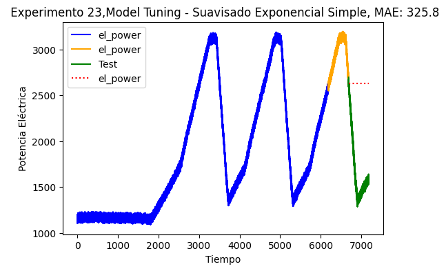
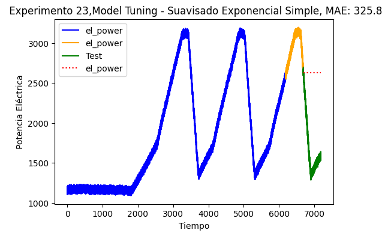

Suavización Exponecial#
Importar Librerías#
# Load libraries
import seaborn as sns
import numpy as np
import pandas as pd
import matplotlib.pyplot as plt
from statsmodels.graphics.gofplots import qqplot
from scipy import stats
# Load sklearn
from sklearn.preprocessing import StandardScaler
from sklearn.model_selection import train_test_split
from sklearn.model_selection import KFold
from sklearn.model_selection import cross_val_score
from sklearn.model_selection import GridSearchCV
from sklearn.linear_model import LinearRegression
from sklearn.linear_model import Lasso
from sklearn.linear_model import ElasticNet
from sklearn.tree import DecisionTreeRegressor
from sklearn.neighbors import KNeighborsRegressor
from sklearn.svm import SVR
from sklearn.pipeline import Pipeline
from sklearn.ensemble import RandomForestRegressor
from sklearn.ensemble import GradientBoostingRegressor
from sklearn.ensemble import ExtraTreesRegressor
from sklearn.ensemble import AdaBoostRegressor
from sklearn.metrics import mean_squared_error
from statsmodels.tsa.stattools import adfuller
#oters
from statsmodels.graphics.tsaplots import plot_acf
from statsmodels.tsa.stattools import acf
from statsmodels.tsa import stattools
from statsmodels.tsa import seasonal
import warnings
warnings.filterwarnings("ignore")
Análisis Exploratorio de Datos#
Cargar el dataset#
A continuación usamos la función read_cvs() de la libreria pandaspara cargar los datos a nuestro entorno de trabajo.
df_train_ex_1 = pd.read_csv("train_ex_1.csv", sep=",")
df_train_ex_9 = pd.read_csv("train_ex_9.csv", sep=",")
df_train_ex_20 = pd.read_csv("train_ex_20.csv", sep=",")
df_train_ex_21 = pd.read_csv("train_ex_21.csv", sep=",")
df_train_ex_23 = pd.read_csv("train_ex_23.csv", sep=",")
df_train_ex_24 = pd.read_csv("train_ex_24.csv", sep=",")
df_test_ex_4 = pd.read_csv("test_ex_4.csv", sep=",")
df_test_ex_22 = pd.read_csv("test_ex_22.csv", sep=",")
EDA Experimento 1#
A continuación verificados el tamaño de nuestro dataset y los nombres de cada una de las columnas y tipo de dato que lo componen:
print(f'Cantidad de filas y columnnas{df_train_ex_1.shape}')
print(f'Nombres de Columnas{df_train_ex_1.columns}')
Cantidad de filas y columnnas(9920, 3)
Nombres de ColumnasIndex(['time', 'input_voltage', 'el_power'], dtype='object')
df_train_ex_1.info()
<class 'pandas.core.frame.DataFrame'>
RangeIndex: 9920 entries, 0 to 9919
Data columns (total 3 columns):
# Column Non-Null Count Dtype
--- ------ -------------- -----
0 time 9920 non-null float64
1 input_voltage 9920 non-null int64
2 el_power 9920 non-null float64
dtypes: float64(2), int64(1)
memory usage: 232.6 KB
df_train_ex_1.head(5)
| time | input_voltage | el_power | |
|---|---|---|---|
| 0 | 810.07028 | 10 | 1228.791720 |
| 1 | 811.06938 | 10 | 1223.041745 |
| 2 | 812.06848 | 10 | 1244.960866 |
| 3 | 813.06758 | 10 | 1229.259058 |
| 4 | 814.06668 | 10 | 1248.117024 |
Hemos observado que nuestro conjunto de datos consta de 3 variables (columnas) que tienen tipos de datos float64 y ìnt64. El tipo de dato float64 abarca variables que contienen datos númericos que incluyen decimales, mientras que el tipo de dato int64abarca variables que continen números enteros. En total, tenemos 9.920 registros en nuestro conjunto de datos del Experimento 1.
Se observa además que no existen datos faltantes o nulos.
Definición de Variables#
Ahora, nuestro conjunto de datos que incluye datos de entrenamiento y validación está compuesto por 9.920 registros a partir del experimento número 1.
A continuación se definen cada una de las variables que componen el conjunto de datos del experimento número 1.
time: Tiempo de respuesta en segundos (s) de la microturbina de gas frente a los cambios de voltaje de entrada y la potencia eléctrica de salida.
input_voltage: Voltaje de Entrada en voltios (V).
el_power: Potencia Eléctrica en watts (W).
A continuación, se presenta un resumen de las métricas de estadística descriptiva, que incluye indicadores clave como la media, la desviación estándar, así como los valores mínimos y máximos, entre otros.
pd.set_option('display.precision', 2)
df_num_exp_1 = df_train_ex_1.drop(columns='time').copy()# Crear una copia del DataFrame y eliminar la columna 'time'
df_num_exp_1.describe()
| input_voltage | el_power | |
|---|---|---|
| count | 9920.00 | 9920.00 |
| mean | 6.82 | 2162.43 |
| std | 3.49 | 1009.47 |
| min | 3.00 | 932.84 |
| 25% | 3.00 | 990.03 |
| 50% | 10.00 | 2709.35 |
| 75% | 10.00 | 3116.42 |
| max | 10.00 | 3249.89 |
df_num_exp_1["input_voltage"].unique()
array([10, 3], dtype=int64)
A continuación se realiza un análisis detallado para cada una de las características del conjunto de tados:
input_voltage (Voltaje de Entrada (V)):Total de observaciones: \(9,920\). Los datos mínimos: \(3 \text{V}\) y máximo: \(10 \text{V}\) sugieren que se usaron dos voltajes de entrada puntuales y que además el voltaje de entrada predominante utilizado por la turbina fue de \(10\text{V}\)
el_power (Potencia (W)):Total de observaciones: \(9,920\). media: \(2.162\text{kW}\), desviación estándar: \(1\text{kW}\), mínimo: \(0.92\text{kW}\), máximo: \(3.2\text{kW}\). Además, se observa que durante el experimento, la potencia eléctrica predominante que entrego la turbina fue de \(3.11\text{kW}\).
f, ax = plt.subplots(1, 2, figsize=(6, 3))
sns.histplot(df_train_ex_1["input_voltage"], ax=ax[0], kde=True, stat="density", color="#30143F")
sns.histplot(df_train_ex_1["el_power"], ax=ax[1], kde=True, stat="density", color="#30143F")
<Axes: xlabel='el_power', ylabel='Density'>
A tráves del gráfico se observa lo descrito anteriormente.
A continuación se realiza un análisis sobre la relación entre las variables input_voltage y el_power.
# Pairwise Pearson correlations
pd.set_option('display.precision', 4)
df_train_c_ex_1 = df_train_ex_1.drop(columns=['time'])
cor_ex_1 = df_train_c_ex_1.corr(method = 'spearman')
cor_ex_1
| input_voltage | el_power | |
|---|---|---|
| input_voltage | 1.0000 | 0.8409 |
| el_power | 0.8409 | 1.0000 |
Podemos observar que el voltaje de entrada y la potencia de salidad de la microtubina de gas presentan una correlación significativa (por ejemplo, \(>0.75\) o \(<−0.75\)).
input_voltageyel_power(0.84): Sugiere que el aumento del voltaje de entrada está asociado con un aumento en la potencia de salidad de la microtrubina de gas en kW.
plt.figure(figsize = (4,4))
mask = np.triu(np.ones_like(cor_ex_1, dtype=bool))
ax = sns.heatmap(cor_ex_1, vmax = 1, square = True, annot = True,mask=mask, cmap = 'viridis')
plt.title('Matriz de Correlación')
plt.show()
A tráves del gráfico se observa lo descrito anteriormente.
Sabemos que nuestra variable timees de tipo float64, por tal razón procedemos a establecerla con formato datetime.
df_train_ex_1['time'] = pd.to_datetime(df_train_ex_1['time'], unit='s')
df_train_ex_1.info()
<class 'pandas.core.frame.DataFrame'>
RangeIndex: 9920 entries, 0 to 9919
Data columns (total 3 columns):
# Column Non-Null Count Dtype
--- ------ -------------- -----
0 time 9920 non-null datetime64[ns]
1 input_voltage 9920 non-null int64
2 el_power 9920 non-null float64
dtypes: datetime64[ns](1), float64(1), int64(1)
memory usage: 232.6 KB
Estructuras internas de las series temporales #
Una serie temporal puede expresarse de la siguiente forma:
Es una suma de los componentes de tendencia (\(f_t\)), componentes estacionales (\(s_t\)), cíclicas (\(c_t\)) e irregulares (\(e_t\)) donde \(t\) es el índice temporal en el que observaciones se han tomado en \(t = 1,2,3, \dots, T\) puntos sucesivos e igualmente espaciados en el tiempo.
Tendencia general #
fig, ax = plt.subplots(figsize=(6, 3))
sns.lineplot(data=df_train_ex_1, x=df_train_ex_1.index, y="el_power", color='#30143F', ax=ax,
linestyle='-')
ax.set_title('Potencia Eléctrica Experimento 1')
ax.set_xlabel('Tiempo (s)')
ax.set_ylabel('Potencia (W)')
plt.tight_layout()
plt.show()
La gráfica de secuencia general ilustra la potencia eléctrica generada por una microturbina de gas a lo largo del tiempo. Se observa un incremento significativo, seguido de un periodo de estabilidad, que luego da paso a una notable disminución, manteniéndose estable nuevamente por un tiempo. Lo anterior se debe a cambios sistémicos del proceso, en este caso se debe a la aplicación de dos voltajes diferentes de entrada.
Este ciclo se repite. Por lo anterior, podemos afirmar que La serie de tiempo correspondiente se caracteriza como estacionaria.
Estacionalidad #
La línea de tendencia del Experimento 1, revela variaciones periódicas y repetitivas en la serie temporal.
Cambios Cíclicos #
El gráfico en la imagen muestra cambios cíclicos en la potencia eléctrica a lo largo del tiempo. El patrón indica aumentos y disminuciones repetidos en la potencia, lo que sugiere un comportamiento periódico o cíclico. Los residuales parecen fluctuar entre valores positivos y negativos, lo cual es típico en datos de series temporales que exhiben tendencias cíclicas.
Estacionaridad #
Otra forma de validar si la serie es estacionariao NO estacionaria, es aplicar la prueba de Dickey-Fuller.
Planteamiento de Hipótesis:
Críterios de aceptación y/o rechazo:
Sí el P-value \(< 0.05 \), se rechaza la hipótesis nula con un a significancia \( \alpha = 0.05\), es decir que la serie de tiempo es estacionaria.
result_1 = adfuller(df_train_ex_1.el_power)
print('ADF Statistic: %f' % result_1[0])
print('p-value: %f' % result_1[1])
ADF Statistic: -2.880035
p-value: 0.047719
De acuerdo al resultado obtenido con la prueba de Dickey-Fuller con P-value \(= 0,047719 < 0,05\), por tanto se rechaza la hipótesis nula con una significancia \(\alpha = 0.05\), es decir que la serie de tiempo es estacionaria.
A continuación gráficamos la Autocorrelación y estacionalidad de la serie de tiempo asociada con la potencia entregada por una microturbina de gas.
fig, axes = plt.subplots(nrows=1, ncols=2, sharex=True,figsize=(20, 5))
axes[0].plot(df_train_ex_1.el_power, color ='#30143F')
axes[0].set_title('Original Series Experimento 1', fontsize=10)
axes[0].tick_params(axis='x', labelsize=6) # Solo para el eje x (inferior)
axes[0].tick_params(axis='y', labelsize=6) # Solo para el eje y (izquierdo)
figtest0=plot_acf(df_train_ex_1.el_power, ax=axes[1], lags = 240, color = '#30143F', vlines_kwargs ={"colors":'#30143F'})
axes[1].set_title('Autocorrelation Experimento 1', fontsize=10)
axes[1].tick_params(axis='x', labelsize=6) # Solo para el eje x (inferior)
axes[1].tick_params(axis='y', labelsize=6) # Solo para el eje y (izquierdo)
Gráfico Original Series: El gráfico representa la potencia eléctrica generada por una microturbina de gas a lo largo del tiempo. Se observa un incremento significativo, seguido de un periodo de estabilidad, que luego da paso a una notable disminución, manteniéndose estable nuevamente por un tiempo.
Gráfico Autocorrelation Original Series: Como se puede observar en gráfico ACF, la autocorrelación de la serie con sus rezagos decae lentamente en el tiempo de forma lineal; ésto es coherente con el resultado obtenido luego de aplicar la prueba de
Dickey-Fuller.
Descomposición de la serie temporal mediante seasonal_descompose() #
A continuación usaremos la librería statsmodels.tsa para estimar tendencias, ciclos y estacionalidad, luego aplicaremos la prueba ADF para verificar la estacionariedad de los datos.
adf_result_1 = stattools.adfuller(df_train_ex_1['el_power'], autolag='AIC')
print('p-valor de la prueba ADF sobre variaciones irregulares en los datos de potencia eléctrica:', adf_result_1[1])
p-valor de la prueba ADF sobre variaciones irregulares en los datos de potencia eléctrica: 0.04771942777211966
Un P-Value de \(0.047\) para la prueba ADF indica que la serie temporal original es estacionaria.
Usaremos la descomposición de serie temporal aditiva, esta descomposición se usa cuando la magnitud del componente estacional se mantiene ligeramente constante a pesar de la tendencia. Matématicamente se expresa como $\(y(t) = S(t) + T(t) + R(t)\)$
Para realizar esta descomposicón usamos la librería statsmodels a tráves de función seasonal_descompose especificando que haremos la descomposición con un modelo aditivo (model = 'aditive') y un periodo de 500 segundos.
df_train_ex_1
| time | input_voltage | el_power | |
|---|---|---|---|
| 0 | 1970-01-01 00:13:30.070280 | 10 | 1228.7917 |
| 1 | 1970-01-01 00:13:31.069380 | 10 | 1223.0417 |
| 2 | 1970-01-01 00:13:32.068480 | 10 | 1244.9609 |
| 3 | 1970-01-01 00:13:33.067580 | 10 | 1229.2591 |
| 4 | 1970-01-01 00:13:34.066680 | 10 | 1248.1170 |
| ... | ... | ... | ... |
| 9915 | 1970-01-01 02:58:36.662180 | 3 | 962.0303 |
| 9916 | 1970-01-01 02:58:37.661280 | 3 | 963.2136 |
| 9917 | 1970-01-01 02:58:38.660380 | 3 | 947.9569 |
| 9918 | 1970-01-01 02:58:39.659480 | 3 | 944.3145 |
| 9919 | 1970-01-01 02:58:40.658580 | 3 | 968.1849 |
9920 rows × 3 columns
print(df_train_ex_1.isnull().sum())
time 0
input_voltage 0
el_power 0
dtype: int64
import pandas as pd
import numpy as np
from statsmodels.tsa.seasonal import seasonal_decompose
import matplotlib.pyplot as plt
df_ex_1_seg= df_train_ex_1.copy()
periodo = 500 # Cambia esto según la estacionalidad esperada
# Realizar la descomposición estacional
decomposition = seasonal_decompose(df_ex_1_seg['el_power'], model='additive', period=periodo)
# Graficar los componentes
plt.figure(figsize=(12, 8))
plt.subplot(411)
plt.plot(df_ex_1_seg['el_power'], label='Observado', color='#30143F', alpha=0.7)
plt.title('Observado Experiemento 1')
plt.legend(loc='upper left')
plt.subplot(412)
plt.plot(decomposition.trend, label='Tendencia', color='#30143F', alpha=0.7)
plt.title('Tendencia Experiemento 1')
plt.legend(loc='upper left')
plt.subplot(413)
plt.plot(decomposition.seasonal, label='Estacionalidad', color='#30143F', alpha=0.7)
plt.title('Estacionalidad Experiemento 1')
plt.legend(loc='upper left')
plt.subplot(414)
plt.plot(decomposition.resid, label='Residual', color='#30143F', alpha=0.7)
plt.title('Residual Experiemento 1')
plt.legend(loc='upper left')
plt.tight_layout()
plt.show()
A través del gráfico se observa la serie temporal original, la componente de tendencia, la componente de estacionalidad y la componente de error. Observamos que la serie presenta una tendencia marcada por cambios sistemáticos en el proceso (cambios en el voltaje de entrada) y, a su vez, un componente de estacionalidad donde la serie muestra variaciones repetitivas y periódicas (aproximadamente cada 500 segundos). En cuanto al error, se observa que la variación en el voltaje de entrada introduce una mayor varianza, lo que genera una relación sistemática en el tiempo. Dicho esto, se deben evaluar los supuestos de independencia en los residuos una vez se entrene el modelo para garantizar que no exista dependencia entre ellos.
EDA Experimento 9#
A continuación verificados el tamaño de nuestro dataset y los nombres de cada una de las columnas y tipo de dato que lo componen:
print(f'Cantidad de filas y columnnas{df_train_ex_9.shape}')
print(f'Nombres de Columnas{df_train_ex_9.columns}')
Cantidad de filas y columnnas(11819, 3)
Nombres de ColumnasIndex(['time', 'input_voltage', 'el_power'], dtype='object')
df_train_ex_9.info()
<class 'pandas.core.frame.DataFrame'>
RangeIndex: 11819 entries, 0 to 11818
Data columns (total 3 columns):
# Column Non-Null Count Dtype
--- ------ -------------- -----
0 time 11819 non-null float64
1 input_voltage 11819 non-null float64
2 el_power 11819 non-null float64
dtypes: float64(3)
memory usage: 277.1 KB
df_train_ex_9.head(5)
| time | input_voltage | el_power | |
|---|---|---|---|
| 0 | 818.84 | 3.445 | 1253.7903 |
| 1 | 819.84 | 3.445 | 1349.8369 |
| 2 | 820.84 | 3.445 | 1262.0338 |
| 3 | 821.84 | 3.445 | 1370.2058 |
| 4 | 822.84 | 3.445 | 1254.7825 |
Hemos observado que nuestro conjunto de datos consta de 3 variables (columnas) que tienen tipos de datos float64 y ìnt64. El tipo de dato float64 abarca variables que contienen datos númericos que incluyen decimales, mientras que el tipo de dato int64abarca variables que continen números enteros. En total, tenemos 11.819 registros en nuestro conjunto de datos del Experimento 9.
Se observa además que no existen datos faltantes o nulos.
A continuación, se presenta un resumen de las métricas de estadística descriptiva, que incluye indicadores clave como la media, la desviación estándar, así como los valores mínimos y máximos, entre otros.
pd.set_option('display.precision', 2)
df_num_exp_9 = df_train_ex_9.drop(columns='time').copy()# Crear una copia del DataFrame y eliminar la columna 'time'
df_num_exp_9.describe()
| input_voltage | el_power | |
|---|---|---|
| count | 11819.00 | 11819.00 |
| mean | 5.54 | 1828.55 |
| std | 1.40 | 402.17 |
| min | 3.44 | 1204.21 |
| 25% | 4.30 | 1449.91 |
| 50% | 5.79 | 1735.78 |
| 75% | 6.88 | 2247.40 |
| max | 7.24 | 2511.70 |
df_train_ex_9["input_voltage"].unique()
array([3.445, 3.855, 4.305, 4.785, 5.29 , 5.79 , 6.245, 6.615, 6.88 ,
7.055, 7.165, 7.24 ])
A continuación se realiza un análisis detallado para cada una de las características del conjunto de tados:
input_voltage (Voltaje de Entrada (V)):Total de observaciones: \(11,819\). Durante el desarrollo del experimento se aplicaron 12 valores de voltaje de entrada distribuidos en el intervalo de \(3.44\text{V}\) a \(7.24\text{V}\) para evaluar el potencia eléctrica de salida de la miniturbina de gas. Además, se observa que durante el experimento, el voltaje de entrada predominante utilizado por la turbina fue de \(6.88 \text{V}\)
el_power (Potencia (W)):Total de observaciones: \(11,819\). media: \(1.828\text{kW}\), desviación estándar: \(0.402\text{kW}\), mínimo: \(1.204\text{kW}\), máximo: \(2.511\text{kW}\). Además, se observa que durante el experimento, la potencia eléctrica predominante que entrego la turbina fue de \(1.449\text{kW}\) y \(2.247\text{kW}\).
f, ax = plt.subplots(1, 2, figsize=(6, 3))
sns.histplot(df_train_ex_9["input_voltage"], ax=ax[0], kde=True, stat="density", color="#30143F")
sns.histplot(df_train_ex_9["el_power"], ax=ax[1], kde=True, stat="density", color="#30143F")
<Axes: xlabel='el_power', ylabel='Density'>
A tráves del gráfico se observa lo descrito anteriormente.
A continuación se realiza un análisis sobre la relación entre las variables input_voltage y el_power.
# Pairwise Pearson correlations
pd.set_option('display.precision', 4)
df_train_c_ex_9 = df_train_ex_9.drop(columns=['time'])
cor_ex_9 = df_train_c_ex_9.corr(method = 'spearman')
cor_ex_9
| input_voltage | el_power | |
|---|---|---|
| input_voltage | 1.0000 | 0.9786 |
| el_power | 0.9786 | 1.0000 |
Podemos observar que el voltaje de entrada y la potencia de salidad de la microtubina de gas presentan una correlación significativa (por ejemplo, \(>0.75\) o \(<−0.75\)).
input_voltageyel_power(0.98): Sugiere que el aumento del voltaje de entrada está asociado con un aumento en la potencia de salidad de la microtrubina de gas en kW.
plt.figure(figsize = (4,4))
mask = np.triu(np.ones_like(cor_ex_1, dtype=bool))
ax = sns.heatmap(cor_ex_9, vmax = 1, square = True, annot = True,mask=mask, cmap = 'viridis')
plt.title('Matriz de Correlación')
plt.show()
A tráves del gráfico se observa lo descrito anteriormente.
Sabemos que nuestra variable timees de tipo float64, por tal razón procedemos a establecerla con formato datetime.
df_train_ex_9['time'] = pd.to_datetime(df_train_ex_9['time'], unit='s')
df_train_ex_9.info()
<class 'pandas.core.frame.DataFrame'>
RangeIndex: 11819 entries, 0 to 11818
Data columns (total 3 columns):
# Column Non-Null Count Dtype
--- ------ -------------- -----
0 time 11819 non-null datetime64[ns]
1 input_voltage 11819 non-null float64
2 el_power 11819 non-null float64
dtypes: datetime64[ns](1), float64(2)
memory usage: 277.1 KB
Estructuras internas de las series temporales #
Una serie temporal puede expresarse de la siguiente forma:
Es una suma de los componentes de tendencia (\(f_t\)), componentes estacionales (\(s_t\)), cíclicas (\(c_t\)) e irregulares (\(e_t\)) donde \(t\) es el índice temporal en el que observaciones se han tomado en \(t = 1,2,3, \dots, T\) puntos sucesivos e igualmente espaciados en el tiempo.
Tendencia general #
fig, ax = plt.subplots(figsize=(6, 3))
sns.lineplot(data=df_train_ex_9, x=df_train_ex_9.index, y="el_power", color='#30143F', ax=ax,
linestyle='-')
ax.set_title('Potencia Eléctrica Experimento 9')
ax.set_xlabel('Tiempo (s)')
ax.set_ylabel('Potencia (W)')
plt.tight_layout()
plt.show()
La gráfica de secuencia general ilustra la potencia eléctrica generada por una microturbina de gas a lo largo del tiempo. Se observa un incremento significativo, seguido de un periodo de estabilidad, que luego da paso a una notable disminución, manteniéndose estable nuevamente por un tiempo. Lo anterior se debe a cambios sistémicos del proceso, en este caso se debe a la aplicación de dos voltajes diferentes de entrada.
Este ciclo se repite. Por lo anterior, podemos afirmar que La serie de tiempo correspondiente se caracteriza como No estacionaria.
Estacionalidad #
La línea de tendencia del Experimento 1, revela variaciones periódicas y repetitivas en la serie temporal.
Cambios Cíclicos #
El gráfico en la imagen muestra cambios cíclicos en la potencia eléctrica a lo largo del tiempo. El patrón indica aumentos y disminuciones repetidos en la potencia, lo que sugiere un comportamiento periódico o cíclico. Los residuales parecen fluctuar entre valores positivos y negativos, lo cual es típico en datos de series temporales que exhiben tendencias cíclicas.
Estacionaridad #
Otra forma de validar si la serie es estacionariao NO estacionaria, es aplicar la prueba de Dickey-Fuller.
Planteamiento de Hipótesis:
Críterios de aceptación y/o rechazo:
Sí el P-value \(< 0.05 \), se rechaza la hipótesis nula con un a significancia \( \alpha = 0.05\), es decir que la serie de tiempo es estacionaria.
result_9 = adfuller(df_train_ex_9.el_power)
print('ADF Statistic: %f' % result_9[0])
print('p-value: %f' % result_9[1])
ADF Statistic: -0.266266
p-value: 0.930148
De acuerdo al resultado obtenido con la prueba de Dickey-Fuller con P-value \(= 0,930148 > 0,05\), por tanto se no se rechaza la hipótesis nula con una significancia \(\alpha = 0.05\), es decir que la serie de tiempo es NO estacionaria.
A continuación gráficamos la Autocorrelación y estacionalidad de la serie de tiempo asociada con la potencia entregada por una microturbina de gas.
fig, axes = plt.subplots(nrows=1, ncols=2, sharex=True,figsize=(20, 5))
axes[0].plot(df_train_ex_9.el_power, color ='#30143F')
axes[0].set_title('Original Series Experimento 9', fontsize=10)
axes[0].tick_params(axis='x', labelsize=6) # Solo para el eje x (inferior)
axes[0].tick_params(axis='y', labelsize=6) # Solo para el eje y (izquierdo)
figtest0=plot_acf(df_train_ex_9.el_power, ax=axes[1], lags = 240, color = '#30143F', vlines_kwargs ={"colors":'#30143F'})
axes[1].set_title('Autocorrelation Experimento 9', fontsize=10)
axes[1].tick_params(axis='x', labelsize=6) # Solo para el eje x (inferior)
axes[1].tick_params(axis='y', labelsize=6) # Solo para el eje y (izquierdo)

Gráfico Original Series: El gráfico representa la potencia eléctrica generada por una microturbina de gas a lo largo del tiempo. Se observa un incremento significativo, seguido de un periodo de estabilidad, que luego da paso a una notable disminución, manteniéndose estable nuevamente por un tiempo.
Gráfico Autocorrelation Original Series: Como se puede observar en gráfico ACF, la autocorrelación de la serie con sus rezagos decae lentamente en el tiempo de forma lineal; ésto es coherente con el resultado obtenido luego de aplicar la prueba de
Dickey-Fuller.
Descomposición de la serie temporal mediante seasonal_descompose() #
A continuación usaremos la librería statsmodels.tsa para estimar tendencias, ciclos y estacionalidad, luego aplicaremos la prueba ADF para verificar la estacionariedad de los datos.
adf_result_9 = stattools.adfuller(df_train_ex_9['el_power'], autolag='AIC')
print('p-valor de la prueba ADF sobre variaciones irregulares en los datos de potencia eléctrica:', adf_result_9[1])
p-valor de la prueba ADF sobre variaciones irregulares en los datos de potencia eléctrica: 0.9301480968227515
Un P-Value de \(0.93\) para la prueba ADF indica que la serie temporal original es No estacionaria.
Usaremos la descomposición de serie temporal aditiva, esta descomposición se usa cuando la magnitud del componente estacional se mantiene ligeramente constante a pesar de la tendencia. Matématicamente se expresa como $\(y(t) = S(t) + T(t) + R(t)\)$
Para realizar esta descomposicón usamos la librería statsmodels a tráves de función seasonal_descompose especificando que haremos la descomposición con un modelo aditivo (model = 'aditive') y un periodo de 500 segundos.
df_train_ex_9
| time | input_voltage | el_power | |
|---|---|---|---|
| 0 | 1970-01-01 00:13:38.840 | 3.445 | 1253.7903 |
| 1 | 1970-01-01 00:13:39.840 | 3.445 | 1349.8369 |
| 2 | 1970-01-01 00:13:40.840 | 3.445 | 1262.0338 |
| 3 | 1970-01-01 00:13:41.840 | 3.445 | 1370.2058 |
| 4 | 1970-01-01 00:13:42.840 | 3.445 | 1254.7825 |
| ... | ... | ... | ... |
| 11814 | 1970-01-01 03:30:32.840 | 7.240 | 2358.5369 |
| 11815 | 1970-01-01 03:30:33.840 | 7.240 | 2481.4890 |
| 11816 | 1970-01-01 03:30:34.840 | 7.240 | 2327.0544 |
| 11817 | 1970-01-01 03:30:35.840 | 7.240 | 2451.0610 |
| 11818 | 1970-01-01 03:30:36.840 | 7.240 | 2336.9530 |
11819 rows × 3 columns
print(df_train_ex_9.isnull().sum())
time 0
input_voltage 0
el_power 0
dtype: int64
import pandas as pd
import numpy as np
from statsmodels.tsa.seasonal import seasonal_decompose
import matplotlib.pyplot as plt
df_ex_9_seg= df_train_ex_9.copy()
periodo = 500 # Cambia esto según la estacionalidad esperada
# Realizar la descomposición estacional
decomposition = seasonal_decompose(df_ex_9_seg['el_power'], model='additive', period=periodo)
# Graficar los componentes
plt.figure(figsize=(12, 8))
plt.subplot(411)
plt.plot(df_ex_9_seg['el_power'], label='Observado', color='#30143F', alpha=0.7)
plt.title('Observado Experimento 9')
plt.legend(loc='upper left')
plt.subplot(412)
plt.plot(decomposition.trend, label='Tendencia', color='#30143F', alpha=0.7)
plt.title('Tendencia Experimento 9')
plt.legend(loc='upper left')
plt.subplot(413)
plt.plot(decomposition.seasonal, label='Estacionalidad', color='#30143F', alpha=0.7)
plt.title('Estacionalidad Experimento 9')
plt.legend(loc='upper left')
plt.subplot(414)
plt.plot(decomposition.resid, label='Residual', color='#30143F', alpha=0.7)
plt.title('Residual Experimento 9')
plt.legend(loc='upper left')
plt.tight_layout()
plt.show()
A través del gráfico se observa la serie temporal original, la componente de tendencia, la componente de estacionalidad y la componente de error. Observamos que la serie presenta una tendencia marcada por cambios sistemáticos en el proceso (cambios en el voltaje de entrada) y, a su vez, un componente de estacionalidad donde la serie muestra variaciones repetitivas y periódicas (aproximadamente cada 500 segundos). En cuanto al error, se observa que la variación en el voltaje de entrada introduce una mayor varianza, lo que genera una relación sistemática en el tiempo. Dicho esto, se deben evaluar los supuestos de independencia en los residuos una vez se entrene el modelo para garantizar que no exista dependencia entre ellos.
EDA Experimento 20#
A continuación verificados el tamaño de nuestro dataset y los nombres de cada una de las columnas y tipo de dato que lo componen:
print(f'Cantidad de filas y columnnas{df_train_ex_20.shape}')
print(f'Nombres de Columnas{df_train_ex_20.columns}')
Cantidad de filas y columnnas(6495, 3)
Nombres de ColumnasIndex(['time', 'input_voltage', 'el_power'], dtype='object')
df_train_ex_20.info()
<class 'pandas.core.frame.DataFrame'>
RangeIndex: 6495 entries, 0 to 6494
Data columns (total 3 columns):
# Column Non-Null Count Dtype
--- ------ -------------- -----
0 time 6495 non-null float64
1 input_voltage 6495 non-null float64
2 el_power 6495 non-null float64
dtypes: float64(3)
memory usage: 152.4 KB
df_train_ex_20.head(5)
| time | input_voltage | el_power | |
|---|---|---|---|
| 0 | 849.22 | 3.0 | 1238.5113 |
| 1 | 850.24 | 3.0 | 1149.5637 |
| 2 | 851.26 | 3.0 | 1226.9592 |
| 3 | 852.28 | 3.0 | 1158.0870 |
| 4 | 853.30 | 3.0 | 1230.4353 |
Hemos observado que nuestro conjunto de datos consta de 3 variables (columnas) que tienen tipos de datos float64 y ìnt64. El tipo de dato float64 abarca variables que contienen datos númericos que incluyen decimales, mientras que el tipo de dato int64abarca variables que continen números enteros. En total, tenemos 6,495 registros en nuestro conjunto de datos del Experimento 20.
Se observa además que no existen datos faltantes o nulos.
A continuación, se presenta un resumen de las métricas de estadística descriptiva, que incluye indicadores clave como la media, la desviación estándar, así como los valores mínimos y máximos, entre otros.
pd.set_option('display.precision', 2)
df_num_exp_20 = df_train_ex_20.drop(columns='time').copy()# Crear una copia del DataFrame y eliminar la columna 'time'
df_num_exp_20.describe()
| input_voltage | el_power | |
|---|---|---|
| count | 6495.00 | 6495.00 |
| mean | 4.66 | 1623.26 |
| std | 2.48 | 632.99 |
| min | 3.00 | 1097.03 |
| 25% | 3.00 | 1158.55 |
| 50% | 3.00 | 1241.35 |
| 75% | 5.00 | 1909.03 |
| max | 10.00 | 3182.43 |
df_train_ex_20["input_voltage"].unique()
array([ 3. , 5. , 7.5, 10. ])
A continuación se realiza un análisis detallado para cada una de las características del conjunto de tados:
input_voltage (Voltaje de Entrada (V)):Total de observaciones: \(6,495\). Durante el desarrollo del experimento se aplicaron 4 valores de voltaje de entrada \(3.0\text{V}\), \(5.0\text{V}\), \(7.5\text{V}\), \(10.0\text{V}\) para evaluar el potencia eléctrica de salida de la miniturbina de gas. Además, se observa que durante el experimento, el voltaje de entrada predominante utilizado por la turbina fue de \(3.0 \text{V}\)
el_power (Potencia (W)):Total de observaciones: \(6,495\). media: \(1.623\text{kW}\), desviación estándar: \(0.632\text{kW}\), mínimo: \(1.097\text{kW}\), máximo: \(3.182\text{kW}\). Además, se observa que durante el experimento, la potencia eléctrica predominante que entrego la turbina fue de \(1.241\text{kW}\).
f, ax = plt.subplots(1, 2, figsize=(6, 3))
sns.histplot(df_train_ex_20["input_voltage"], ax=ax[0], kde=True, stat="density", color="#30143F")
sns.histplot(df_train_ex_20["el_power"], ax=ax[1], kde=True, stat="density", color="#30143F")
<Axes: xlabel='el_power', ylabel='Density'>
A tráves del gráfico se observa lo descrito anteriormente.
A continuación se realiza un análisis sobre la relación entre las variables input_voltage y el_power.
# Pairwise Pearson correlations
pd.set_option('display.precision', 4)
df_train_c_ex_20 = df_train_ex_20.drop(columns=['time'])
cor_ex_20 = df_train_c_ex_20.corr(method = 'spearman')
cor_ex_20
| input_voltage | el_power | |
|---|---|---|
| input_voltage | 1.0000 | 0.7528 |
| el_power | 0.7528 | 1.0000 |
Podemos observar que el voltaje de entrada y la potencia de salidad de la microtubina de gas presentan una correlación significativa (por ejemplo, \(>0.75\) o \(<−0.75\)).
input_voltageyel_power(0.75): Sugiere que el aumento del voltaje de entrada está asociado con un aumento en la potencia de salidad de la microtrubina de gas en kW.
plt.figure(figsize = (4,4))
mask = np.triu(np.ones_like(cor_ex_1, dtype=bool))
ax = sns.heatmap(cor_ex_20, vmax = 1, square = True, annot = True,mask=mask, cmap = 'viridis')
plt.title('Matriz de Correlación')
plt.show()

A tráves del gráfico se observa lo descrito anteriormente.
Sabemos que nuestra variable timees de tipo float64, por tal razón procedemos a establecerla con formato datetime.
df_train_ex_20['time'] = pd.to_datetime(df_train_ex_20['time'], unit='s')
df_train_ex_20.info()
<class 'pandas.core.frame.DataFrame'>
RangeIndex: 6495 entries, 0 to 6494
Data columns (total 3 columns):
# Column Non-Null Count Dtype
--- ------ -------------- -----
0 time 6495 non-null datetime64[ns]
1 input_voltage 6495 non-null float64
2 el_power 6495 non-null float64
dtypes: datetime64[ns](1), float64(2)
memory usage: 152.4 KB
Estructuras internas de las series temporales #
Una serie temporal puede expresarse de la siguiente forma:
Es una suma de los componentes de tendencia (\(f_t\)), componentes estacionales (\(s_t\)), cíclicas (\(c_t\)) e irregulares (\(e_t\)) donde \(t\) es el índice temporal en el que observaciones se han tomado en \(t = 1,2,3, \dots, T\) puntos sucesivos e igualmente espaciados en el tiempo.
Tendencia general #
fig, ax = plt.subplots(figsize=(6, 3))
sns.lineplot(data=df_train_ex_20, x=df_train_ex_20.index, y="el_power", color='#30143F', ax=ax,
linestyle='-')
ax.set_title('Potencia Eléctrica Experimento 20')
ax.set_xlabel('Tiempo (s)')
ax.set_ylabel('Potencia (W)')
plt.tight_layout()
plt.show()
La gráfica de secuencia general ilustra la potencia eléctrica generada por una microturbina de gas a lo largo del tiempo. Se observa un incremento significativo, seguido de un periodo de estabilidad, que luego da paso a una notable disminución, manteniéndose estable nuevamente por un tiempo. Lo anterior se debe a cambios sistémicos del proceso, en este caso se debe a la aplicación de dos voltajes diferentes de entrada.
Este ciclo se repite. Por lo anterior, podemos afirmar que La serie de tiempo correspondiente se caracteriza como estacionaria.
Estacionalidad #
La línea de tendencia del Experimento 1, revela variaciones periódicas y repetitivas en la serie temporal.
Cambios Cíclicos #
El gráfico en la imagen muestra cambios cíclicos en la potencia eléctrica a lo largo del tiempo. El patrón indica aumentos y disminuciones repetidos en la potencia, lo que sugiere un comportamiento periódico o cíclico. Los residuales parecen fluctuar entre valores positivos y negativos, lo cual es típico en datos de series temporales que exhiben tendencias cíclicas.
Estacionaridad #
Otra forma de validar si la serie es estacionariao NO estacionaria, es aplicar la prueba de Dickey-Fuller.
Planteamiento de Hipótesis:
Críterios de aceptación y/o rechazo:
Sí el P-value \(< 0.05 \), se rechaza la hipótesis nula con un a significancia \( \alpha = 0.05\), es decir que la serie de tiempo es estacionaria.
result_20 = adfuller(df_train_ex_20.el_power)
print('ADF Statistic: %f' % result_20[0])
print('p-value: %f' % result_20[1])
ADF Statistic: -3.391960
p-value: 0.011236
De acuerdo al resultado obtenido con la prueba de Dickey-Fuller con P-value \(= 0,011236 < 0,05\), por tanto se rechaza la hipótesis nula con una significancia \(\alpha = 0.05\), es decir que la serie de tiempo es estacionaria.
A continuación gráficamos la Autocorrelación y estacionalidad de la serie de tiempo asociada con la potencia entregada por una microturbina de gas.
fig, axes = plt.subplots(nrows=1, ncols=2, sharex=True,figsize=(20, 5))
axes[0].plot(df_train_ex_20.el_power, color ='#30143F')
axes[0].set_title('Original Series Experimento 20', fontsize=10)
axes[0].tick_params(axis='x', labelsize=6) # Solo para el eje x (inferior)
axes[0].tick_params(axis='y', labelsize=6) # Solo para el eje y (izquierdo)
figtest0=plot_acf(df_train_ex_20.el_power, ax=axes[1], lags = 240, color = '#30143F', vlines_kwargs ={"colors":'#30143F'})
axes[1].set_title('Autocorrelation Experimento 20', fontsize=10)
axes[1].tick_params(axis='x', labelsize=6) # Solo para el eje x (inferior)
axes[1].tick_params(axis='y', labelsize=6) # Solo para el eje y (izquierdo)
Gráfico Original Series: El gráfico representa la potencia eléctrica generada por una microturbina de gas a lo largo del tiempo. Se observa un incremento significativo, seguido de un periodo de estabilidad, que luego da paso a una notable disminución, manteniéndose estable nuevamente por un tiempo.
Gráfico Autocorrelation Original Series: Como se puede observar en gráfico ACF, la autocorrelación de la serie con sus rezagos decae lentamente en el tiempo de forma lineal; ésto es coherente con el resultado obtenido luego de aplicar la prueba de
Dickey-Fuller.
Descomposición de la serie temporal mediante seasonal_descompose() #
A continuación usaremos la librería statsmodels.tsa para estimar tendencias, ciclos y estacionalidad, luego aplicaremos la prueba ADF para verificar la estacionariedad de los datos.
adf_result_20 = stattools.adfuller(df_train_ex_20['el_power'], autolag='AIC')
print('p-valor de la prueba ADF sobre variaciones irregulares en los datos de potencia eléctrica:', adf_result_20[1])
p-valor de la prueba ADF sobre variaciones irregulares en los datos de potencia eléctrica: 0.011236042963494716
Un P-Value de \(0.01123\) para la prueba ADF indica que la serie temporal original es estacionaria.
Usaremos la descomposición de serie temporal multiplicativa, esta descomposición se usa cuando la magnitud del componente estacional se mantiene ligeramente constante a pesar de la tendencia. Matématicamente se expresa como $\(y(t) = S(t) * T(t) * R(t)\)$
Para realizar esta descomposicón usamos la librería statsmodels a tráves de función seasonal_descompose especificando que haremos la descomposición con un modelo aditivo (model = 'multiplicative') y un periodo de 500 segundos.
df_train_ex_20
| time | input_voltage | el_power | |
|---|---|---|---|
| 0 | 1970-01-01 00:14:09.220 | 3.0 | 1238.5113 |
| 1 | 1970-01-01 00:14:10.240 | 3.0 | 1149.5637 |
| 2 | 1970-01-01 00:14:11.260 | 3.0 | 1226.9592 |
| 3 | 1970-01-01 00:14:12.280 | 3.0 | 1158.0870 |
| 4 | 1970-01-01 00:14:13.300 | 3.0 | 1230.4353 |
| ... | ... | ... | ... |
| 6490 | 1970-01-01 02:10:19.820 | 3.0 | 1127.8140 |
| 6491 | 1970-01-01 02:10:20.900 | 3.0 | 1214.4917 |
| 6492 | 1970-01-01 02:10:21.920 | 3.0 | 1122.5833 |
| 6493 | 1970-01-01 02:10:22.940 | 3.0 | 1207.7784 |
| 6494 | 1970-01-01 02:10:24.000 | 3.0 | 1120.8016 |
6495 rows × 3 columns
print(df_train_ex_20.isnull().sum())
time 0
input_voltage 0
el_power 0
dtype: int64
import pandas as pd
import numpy as np
from statsmodels.tsa.seasonal import seasonal_decompose
import matplotlib.pyplot as plt
df_ex_20_seg= df_train_ex_20.copy()
periodo = 500 # Cambia esto según la estacionalidad esperada
# Realizar la descomposición estacional
decomposition = seasonal_decompose(df_ex_20_seg['el_power'], model='multiplicative', period=periodo)
# Graficar los componentes
plt.figure(figsize=(12, 8))
plt.subplot(411)
plt.plot(df_ex_20_seg['el_power'], label='Observado', color='#30143F', alpha=0.7)
plt.title('Observado Experimento 20')
plt.legend(loc='upper left')
plt.subplot(412)
plt.plot(decomposition.trend, label='Tendencia', color='#30143F', alpha=0.7)
plt.title('Tendencia Experimento 20')
plt.legend(loc='upper left')
plt.subplot(413)
plt.plot(decomposition.seasonal, label='Estacionalidad', color='#30143F', alpha=0.7)
plt.title('Estacionalidad Experimento 20')
plt.legend(loc='upper left')
plt.subplot(414)
plt.plot(decomposition.resid, label='Residual', color='#30143F', alpha=0.7)
plt.title('Residual Experimento 20')
plt.legend(loc='upper left')
plt.tight_layout()
plt.show()
A través del gráfico se observa la serie temporal original, la componente de tendencia, la componente de estacionalidad y la componente de error. Observamos que la serie presenta una tendencia marcada por cambios sistemáticos en el proceso (cambios en el voltaje de entrada) y, a su vez, un componente de estacionalidad donde la serie muestra variaciones repetitivas y periódicas (aproximadamente cada 500 segundos). En cuanto al error, se observa que la variación en el voltaje de entrada introduce una mayor varianza, lo que genera una relación sistemática en el tiempo. Dicho esto, se deben evaluar los supuestos de independencia en los residuos una vez se entrene el modelo para garantizar que no exista dependencia entre ellos.
EDA Experimento 21#
A continuación verificados el tamaño de nuestro dataset y los nombres de cada una de las columnas y tipo de dato que lo componen:
print(f'Cantidad de filas y columnnas{df_train_ex_21.shape}')
print(f'Nombres de Columnas{df_train_ex_21.columns}')
Cantidad de filas y columnnas(6495, 3)
Nombres de ColumnasIndex(['time', 'input_voltage', 'el_power'], dtype='object')
df_train_ex_21.info()
<class 'pandas.core.frame.DataFrame'>
RangeIndex: 6495 entries, 0 to 6494
Data columns (total 3 columns):
# Column Non-Null Count Dtype
--- ------ -------------- -----
0 time 6495 non-null float64
1 input_voltage 6495 non-null float64
2 el_power 6495 non-null float64
dtypes: float64(3)
memory usage: 152.4 KB
df_train_ex_21.head(5)
| time | input_voltage | el_power | |
|---|---|---|---|
| 0 | 847.72 | 3.0 | 1089.8951 |
| 1 | 848.74 | 3.0 | 1179.8432 |
| 2 | 849.78 | 3.0 | 1099.4976 |
| 3 | 850.80 | 3.0 | 1181.5511 |
| 4 | 851.82 | 3.0 | 1100.8238 |
Hemos observado que nuestro conjunto de datos consta de 3 variables (columnas) que tienen tipos de datos float64 y ìnt64. El tipo de dato float64 abarca variables que contienen datos númericos que incluyen decimales, mientras que el tipo de dato int64abarca variables que continen números enteros. En total, tenemos 6,495 registros en nuestro conjunto de datos del Experimento 21.
Se observa además que no existen datos faltantes o nulos.
A continuación, se presenta un resumen de las métricas de estadística descriptiva, que incluye indicadores clave como la media, la desviación estándar, así como los valores mínimos y máximos, entre otros.
pd.set_option('display.precision', 2)
df_num_exp_21 = df_train_ex_21.drop(columns='time').copy()# Crear una copia del DataFrame y eliminar la columna 'time'
df_num_exp_21.describe()
| input_voltage | el_power | |
|---|---|---|
| count | 6495.00 | 6495.00 |
| mean | 4.66 | 1576.46 |
| std | 2.48 | 638.04 |
| min | 3.00 | 1045.54 |
| 25% | 3.00 | 1112.55 |
| 50% | 3.00 | 1191.25 |
| 75% | 5.00 | 1889.46 |
| max | 10.00 | 3191.97 |
df_train_ex_21["input_voltage"].unique()
array([ 3. , 5. , 7.5, 10. ])
A continuación se realiza un análisis detallado para cada una de las características del conjunto de tados:
input_voltage (Voltaje de Entrada (V)):Total de observaciones: \(6,495\). Durante el desarrollo del experimento se aplicaron 4 valores de voltaje de entrada \(3.0\text{V}\), \(5.0\text{V}\), \(7.5\text{V}\), \(10.0\text{V}\) para evaluar el potencia eléctrica de salida de la miniturbina de gas. Además, se observa que durante el experimento, el voltaje de entrada predominante utilizado por la turbina fue de \(3.0 \text{V}\). Con respecto a lo anterior practicamente se repetio el experimento 20.
el_power (Potencia (W)):Total de observaciones: \(6,495\). media: \(1.576\text{kW}\), desviación estándar: \(0.638\text{kW}\), mínimo: \(1.045\text{kW}\), máximo: \(3.191\text{kW}\). Además, se observa que durante el experimento, la potencia eléctrica predominante que entrego la microturbina fue de \(1.191\text{kW}\). Existe una ligera variación en comparación con la potencia eléctica entregada por la microturbina en el experimento 20. Por lo anterior, podemos afirmar que los resultados son reproducibles.
f, ax = plt.subplots(1, 2, figsize=(6, 3))
sns.histplot(df_train_ex_21["input_voltage"], ax=ax[0], kde=True, stat="density", color="#30143F")
sns.histplot(df_train_ex_21["el_power"], ax=ax[1], kde=True, stat="density", color="#30143F")
<Axes: xlabel='el_power', ylabel='Density'>
A tráves del gráfico se observa lo descrito anteriormente.
A continuación se realiza un análisis sobre la relación entre las variables input_voltage y el_power.
# Pairwise Pearson correlations
pd.set_option('display.precision', 4)
df_train_c_ex_21 = df_train_ex_21.drop(columns=['time'])
cor_ex_21 = df_train_c_ex_21.corr(method = 'spearman')
cor_ex_21
| input_voltage | el_power | |
|---|---|---|
| input_voltage | 1.0000 | 0.7479 |
| el_power | 0.7479 | 1.0000 |
Podemos observar que el voltaje de entrada y la potencia de salidad de la microtubina de gas presentan una correlación significativa (por ejemplo, \(>0.75\) o \(<−0.75\)).
input_voltageyel_power(0.747): Sugiere que el aumento del voltaje de entrada está asociado con un aumento en la potencia de salidad de la microtrubina de gas en kW.
plt.figure(figsize = (4,4))
mask = np.triu(np.ones_like(cor_ex_1, dtype=bool))
ax = sns.heatmap(cor_ex_21, vmax = 1, square = True, annot = True,mask=mask, cmap = 'viridis')
plt.title('Matriz de Correlación')
plt.show()
A tráves del gráfico se observa lo descrito anteriormente.
Sabemos que nuestra variable timees de tipo float64, por tal razón procedemos a establecerla con formato datetime.
df_train_ex_21['time'] = pd.to_datetime(df_train_ex_21['time'], unit='s')
df_train_ex_21.info()
<class 'pandas.core.frame.DataFrame'>
RangeIndex: 6495 entries, 0 to 6494
Data columns (total 3 columns):
# Column Non-Null Count Dtype
--- ------ -------------- -----
0 time 6495 non-null datetime64[ns]
1 input_voltage 6495 non-null float64
2 el_power 6495 non-null float64
dtypes: datetime64[ns](1), float64(2)
memory usage: 152.4 KB
Estructuras internas de las series temporales #
Una serie temporal puede expresarse de la siguiente forma:
Es una suma de los componentes de tendencia (\(f_t\)), componentes estacionales (\(s_t\)), cíclicas (\(c_t\)) e irregulares (\(e_t\)) donde \(t\) es el índice temporal en el que observaciones se han tomado en \(t = 1,2,3, \dots, T\) puntos sucesivos e igualmente espaciados en el tiempo.
Tendencia general #
fig, ax = plt.subplots(figsize=(6, 3))
sns.lineplot(data=df_train_ex_21, x=df_train_ex_21.index, y="el_power", color='#30143F', ax=ax,
linestyle='-')
ax.set_title('Potencia Eléctrica Experimento 21')
ax.set_xlabel('Tiempo (s)')
ax.set_ylabel('Potencia (W)')
plt.tight_layout()
plt.show()
La gráfica de secuencia general ilustra la potencia eléctrica generada por una microturbina de gas a lo largo del tiempo. Se observa un incremento significativo, seguido de un periodo de estabilidad, que luego da paso a una notable disminución, manteniéndose estable nuevamente por un tiempo. Lo anterior se debe a cambios sistémicos del proceso, en este caso se debe a la aplicación de dos voltajes diferentes de entrada.
Este ciclo se repite. Por lo anterior, podemos afirmar que La serie de tiempo correspondiente se caracteriza como estacionaria.
Estacionalidad #
La línea de tendencia del Experimento 1, revela variaciones periódicas y repetitivas en la serie temporal.
Cambios Cíclicos #
El gráfico en la imagen muestra cambios cíclicos en la potencia eléctrica a lo largo del tiempo. El patrón indica aumentos y disminuciones repetidos en la potencia, lo que sugiere un comportamiento periódico o cíclico. Los residuales parecen fluctuar entre valores positivos y negativos, lo cual es típico en datos de series temporales que exhiben tendencias cíclicas.
Estacionaridad #
Otra forma de validar si la serie es estacionariao NO estacionaria, es aplicar la prueba de Dickey-Fuller.
Planteamiento de Hipótesis:
Críterios de aceptación y/o rechazo:
Sí el P-value \(< 0.05 \), se rechaza la hipótesis nula con un a significancia \( \alpha = 0.05\), es decir que la serie de tiempo es estacionaria.
result_21 = adfuller(df_train_ex_21.el_power)
print('ADF Statistic: %f' % result_21[0])
print('p-value: %f' % result_21[1])
ADF Statistic: -3.451626
p-value: 0.009320
De acuerdo al resultado obtenido con la prueba de Dickey-Fuller con P-value \(= 0,009320 < 0,05\), por tanto se rechaza la hipótesis nula con una significancia \(\alpha = 0.05\), es decir que la serie de tiempo es estacionaria.
A continuación gráficamos la Autocorrelación y estacionalidad de la serie de tiempo asociada con la potencia entregada por una microturbina de gas.
fig, axes = plt.subplots(nrows=1, ncols=2, sharex=True,figsize=(20, 5))
axes[0].plot(df_train_ex_21.el_power, color ='#30143F')
axes[0].set_title('Original Series Experimento 21', fontsize=10)
axes[0].tick_params(axis='x', labelsize=6) # Solo para el eje x (inferior)
axes[0].tick_params(axis='y', labelsize=6) # Solo para el eje y (izquierdo)
figtest0=plot_acf(df_train_ex_21.el_power, ax=axes[1], lags = 240, color = '#30143F', vlines_kwargs ={"colors":'#30143F'})
axes[1].set_title('Autocorrelation Experimento 21', fontsize=10)
axes[1].tick_params(axis='x', labelsize=6) # Solo para el eje x (inferior)
axes[1].tick_params(axis='y', labelsize=6) # Solo para el eje y (izquierdo)
Gráfico Original Series: El gráfico representa la potencia eléctrica generada por una microturbina de gas a lo largo del tiempo. Se observa un incremento significativo, seguido de un periodo de estabilidad, que luego da paso a una notable disminución, manteniéndose estable nuevamente por un tiempo.
Gráfico Autocorrelation Original Series: Como se puede observar en gráfico ACF, la autocorrelación de la serie con sus rezagos decae lentamente en el tiempo de forma lineal; ésto es coherente con el resultado obtenido luego de aplicar la prueba de
Dickey-Fuller.
Descomposición de la serie temporal mediante seasonal_descompose() #
A continuación usaremos la librería statsmodels.tsa para estimar tendencias, ciclos y estacionalidad, luego aplicaremos la prueba ADF para verificar la estacionariedad de los datos.
adf_result_21 = stattools.adfuller(df_train_ex_21['el_power'], autolag='AIC')
print('p-valor de la prueba ADF sobre variaciones irregulares en los datos de potencia eléctrica:', adf_result_21[1])
p-valor de la prueba ADF sobre variaciones irregulares en los datos de potencia eléctrica: 0.009319892749351391
Un P-Value de \(0.0009319\) para la prueba ADF indica que la serie temporal original es estacionaria.
Usaremos la descomposición de serie temporal multiplicativa, esta descomposición se usa cuando la magnitud del componente estacional se mantiene ligeramente constante a pesar de la tendencia. Matématicamente se expresa como $\(y(t) = S(t) * T(t) * R(t)\)$
Para realizar esta descomposicón usamos la librería statsmodels a tráves de función seasonal_descompose especificando que haremos la descomposición con un modelo aditivo (model = 'multiplicative') y un periodo de 500 segundos.
df_train_ex_21
| time | input_voltage | el_power | |
|---|---|---|---|
| 0 | 1970-01-01 00:14:07.720 | 3.0 | 1089.8951 |
| 1 | 1970-01-01 00:14:08.740 | 3.0 | 1179.8432 |
| 2 | 1970-01-01 00:14:09.780 | 3.0 | 1099.4976 |
| 3 | 1970-01-01 00:14:10.800 | 3.0 | 1181.5511 |
| 4 | 1970-01-01 00:14:11.820 | 3.0 | 1100.8238 |
| ... | ... | ... | ... |
| 6490 | 1970-01-01 02:09:32.540 | 3.0 | 1161.6509 |
| 6491 | 1970-01-01 02:09:33.560 | 3.0 | 1068.6059 |
| 6492 | 1970-01-01 02:09:34.560 | 3.0 | 1159.2112 |
| 6493 | 1970-01-01 02:09:35.560 | 3.0 | 1073.7897 |
| 6494 | 1970-01-01 02:09:36.600 | 3.0 | 1148.9050 |
6495 rows × 3 columns
print(df_train_ex_21.isnull().sum())
time 0
input_voltage 0
el_power 0
dtype: int64
import pandas as pd
import numpy as np
from statsmodels.tsa.seasonal import seasonal_decompose
import matplotlib.pyplot as plt
df_ex_21_seg= df_train_ex_21.copy()
periodo = 500 # Cambia esto según la estacionalidad esperada
# Realizar la descomposición estacional
decomposition = seasonal_decompose(df_ex_21_seg['el_power'], model='multiplicative', period=periodo)
# Graficar los componentes
plt.figure(figsize=(12, 8))
plt.subplot(411)
plt.plot(df_ex_21_seg['el_power'], label='Observado', color='#30143F', alpha=0.7)
plt.title('Observado Experimento 21')
plt.legend(loc='upper left')
plt.subplot(412)
plt.plot(decomposition.trend, label='Tendencia', color='#30143F', alpha=0.7)
plt.title('Tendencia Experimento 21')
plt.legend(loc='upper left')
plt.subplot(413)
plt.plot(decomposition.seasonal, label='Estacionalidad', color='#30143F', alpha=0.7)
plt.title('Estacionalidad Experimento 21')
plt.legend(loc='upper left')
plt.subplot(414)
plt.plot(decomposition.resid, label='Residual', color='#30143F', alpha=0.7)
plt.title('Residual Experimento 21')
plt.legend(loc='upper left')
plt.tight_layout()
plt.show()
A través del gráfico se observa la serie temporal original, la componente de tendencia, la componente de estacionalidad y la componente de error. Observamos que la serie presenta una tendencia marcada por cambios sistemáticos en el proceso (cambios en el voltaje de entrada) y, a su vez, un componente de estacionalidad donde la serie muestra variaciones repetitivas y periódicas (aproximadamente cada 500 segundos). En cuanto al error, se observa que la variación en el voltaje de entrada introduce una mayor varianza, lo que genera una relación sistemática en el tiempo. Dicho esto, se deben evaluar los supuestos de independencia en los residuos una vez se entrene el modelo para garantizar que no exista dependencia entre ellos.
EDA Experimento 23#
A continuación verificados el tamaño de nuestro dataset y los nombres de cada una de las columnas y tipo de dato que lo componen:
print(f'Cantidad de filas y columnnas{df_train_ex_23.shape}')
print(f'Nombres de Columnas{df_train_ex_23.columns}')
Cantidad de filas y columnnas(9188, 3)
Nombres de ColumnasIndex(['time', 'input_voltage', 'el_power'], dtype='object')
df_train_ex_23.info()
<class 'pandas.core.frame.DataFrame'>
RangeIndex: 9188 entries, 0 to 9187
Data columns (total 3 columns):
# Column Non-Null Count Dtype
--- ------ -------------- -----
0 time 9188 non-null float64
1 input_voltage 9188 non-null float64
2 el_power 9188 non-null float64
dtypes: float64(3)
memory usage: 215.5 KB
df_train_ex_23.head(5)
| time | input_voltage | el_power | |
|---|---|---|---|
| 0 | 810.00 | 3.0 | 1102.9497 |
| 1 | 811.04 | 3.0 | 1199.4038 |
| 2 | 812.08 | 3.0 | 1113.1998 |
| 3 | 813.18 | 3.0 | 1200.3779 |
| 4 | 814.18 | 3.0 | 1105.4653 |
Hemos observado que nuestro conjunto de datos consta de 3 variables (columnas) que tienen tipos de datos float64 y ìnt64. El tipo de dato float64 abarca variables que contienen datos númericos que incluyen decimales, mientras que el tipo de dato int64abarca variables que continen números enteros. En total, tenemos 9,188 registros en nuestro conjunto de datos del Experimento 23.
Se observa además que no existen datos faltantes o nulos.
A continuación, se presenta un resumen de las métricas de estadística descriptiva, que incluye indicadores clave como la media, la desviación estándar, así como los valores mínimos y máximos, entre otros.
pd.set_option('display.precision', 2)
df_num_exp_23 = df_train_ex_23.drop(columns='time').copy()# Crear una copia del DataFrame y eliminar la columna 'time'
df_num_exp_23.describe()
| input_voltage | el_power | |
|---|---|---|
| count | 9188.00 | 9188.00 |
| mean | 5.26 | 1899.23 |
| std | 2.24 | 693.04 |
| min | 3.00 | 1053.22 |
| 25% | 3.00 | 1212.05 |
| 50% | 4.84 | 1694.53 |
| 75% | 7.05 | 2508.56 |
| max | 9.63 | 3193.85 |
df_train_ex_23["input_voltage"].unique()
array([3. , 3.36842105, 3.73684211, 4.10526316, 4.47368421,
4.84210526, 5.21052632, 5.57894737, 5.94736842, 6.31578947,
6.68421053, 7.05263158, 7.42105263, 7.78947368, 8.15789474,
8.52631579, 8.89473684, 9.26315789, 9.63157895])
A continuación se realiza un análisis detallado para cada una de las características del conjunto de tados:
input_voltage (Voltaje de Entrada (V)):Total de observaciones: \(9,188\). Durante el desarrollo del experimento se aplicaron 19 valores de voltaje de entrada distribuidos en el intervalo de \(3.0\text{V}\) a \(9.63\text{V}\) para evaluar el potencia eléctrica de salida de la miniturbina de gas. Además, se observa que durante el experimento, el voltaje de entrada predominante utilizado por la turbina fue de \(3.0\text{V}\) lo anterior producto de la igualdad del primer quantil y el minímo. Además podemos decir que \(50\%\) de los valores de voltaje están por debajo de \(4.84\text{V}\) (mediana) \(75\%\) de los valores están por debajo de \(7.05\text{V}\).
el_power (Potencia (W)):Total de observaciones: \(9,188\). media: \(1.899\text{kW}\), desviación estándar: \(0.693\text{kW}\), mínimo: \(1.053\text{kW}\), máximo: \(3.193\text{kW}\). Además, se observa que durante el experimento, la potencia eléctrica predominante que entrego la microturbina se encuentra entre \(1.053\text{kW}\) y \(1.212\text{kW}\).
f, ax = plt.subplots(1, 2, figsize=(6, 3))
sns.histplot(df_train_ex_23["input_voltage"], ax=ax[0], kde=True, stat="density", color="#30143F")
sns.histplot(df_train_ex_23["el_power"], ax=ax[1], kde=True, stat="density", color="#30143F")
<Axes: xlabel='el_power', ylabel='Density'>
A tráves del gráfico se observa lo descrito anteriormente.
A continuación se realiza un análisis sobre la relación entre las variables input_voltage y el_power.
# Pairwise Pearson correlations
pd.set_option('display.precision', 4)
df_train_c_ex_23 = df_train_ex_23.drop(columns=['time'])
cor_ex_23 = df_train_c_ex_23.corr(method = 'spearman')
cor_ex_23
| input_voltage | el_power | |
|---|---|---|
| input_voltage | 1.0000 | 0.8161 |
| el_power | 0.8161 | 1.0000 |
Podemos observar que el voltaje de entrada y la potencia de salidad de la microtubina de gas presentan una correlación significativa (por ejemplo, \(>0.75\) o \(<−0.75\)).
input_voltageyel_power(0.816): Sugiere que el aumento del voltaje de entrada está asociado con un aumento en la potencia de salidad de la microtrubina de gas en kW.
plt.figure(figsize = (4,4))
mask = np.triu(np.ones_like(cor_ex_23, dtype=bool))
ax = sns.heatmap(cor_ex_23, vmax = 1, square = True, annot = True,mask=mask, cmap = 'viridis')
plt.title('Matriz de Correlación')
plt.show()
A tráves del gráfico se observa lo descrito anteriormente.
Sabemos que nuestra variable timees de tipo float64, por tal razón procedemos a establecerla con formato datetime.
df_train_ex_23['time'] = pd.to_datetime(df_train_ex_23['time'], unit='s')
df_train_ex_23.info()
<class 'pandas.core.frame.DataFrame'>
RangeIndex: 9188 entries, 0 to 9187
Data columns (total 3 columns):
# Column Non-Null Count Dtype
--- ------ -------------- -----
0 time 9188 non-null datetime64[ns]
1 input_voltage 9188 non-null float64
2 el_power 9188 non-null float64
dtypes: datetime64[ns](1), float64(2)
memory usage: 215.5 KB
Estructuras internas de las series temporales #
Una serie temporal puede expresarse de la siguiente forma:
Es una suma de los componentes de tendencia (\(f_t\)), componentes estacionales (\(s_t\)), cíclicas (\(c_t\)) e irregulares (\(e_t\)) donde \(t\) es el índice temporal en el que observaciones se han tomado en \(t = 1,2,3, \dots, T\) puntos sucesivos e igualmente espaciados en el tiempo.
Tendencia general #
fig, ax = plt.subplots(figsize=(6, 3))
sns.lineplot(data=df_train_ex_23, x=df_train_ex_23.index, y="el_power", color='#30143F', ax=ax,
linestyle='-')
ax.set_title('Potencia Eléctrica Experimento 23')
ax.set_xlabel('Tiempo (s)')
ax.set_ylabel('Potencia (W)')
plt.tight_layout()
plt.show()
La gráfica de secuencia general ilustra la potencia eléctrica generada por una microturbina de gas a lo largo del tiempo. Se observa un incremento significativo, seguido de un periodo de estabilidad, que luego da paso a una notable disminución, manteniéndose estable nuevamente por un tiempo. Lo anterior se debe a cambios sistémicos del proceso, en este caso se debe a la aplicación de dos voltajes diferentes de entrada.
Este ciclo se repite. Por lo anterior, podemos afirmar que La serie de tiempo correspondiente se caracteriza como estacionaria.
Estacionalidad #
La línea de tendencia del Experimento 1, revela variaciones periódicas y repetitivas en la serie temporal.
Cambios Cíclicos #
El gráfico en la imagen muestra cambios cíclicos en la potencia eléctrica a lo largo del tiempo. El patrón indica aumentos y disminuciones repetidos en la potencia, lo que sugiere un comportamiento periódico o cíclico. Los residuales parecen fluctuar entre valores positivos y negativos, lo cual es típico en datos de series temporales que exhiben tendencias cíclicas.
Estacionaridad #
Otra forma de validar si la serie es estacionariao NO estacionaria, es aplicar la prueba de Dickey-Fuller.
Planteamiento de Hipótesis:
Críterios de aceptación y/o rechazo:
Sí el P-value \(< 0.05 \), se rechaza la hipótesis nula con un a significancia \( \alpha = 0.05\), es decir que la serie de tiempo es estacionaria.
result_23 = adfuller(df_train_ex_23.el_power)
print('ADF Statistic: %f' % result_23[0])
print('p-value: %f' % result_23[1])
ADF Statistic: -4.266146
p-value: 0.000508
De acuerdo al resultado obtenido con la prueba de Dickey-Fuller con P-value \(= 0,000508 < 0,05\), por tanto se rechaza la hipótesis nula con una significancia \(\alpha = 0.05\), es decir que la serie de tiempo es estacionaria.
A continuación gráficamos la Autocorrelación y estacionalidad de la serie de tiempo asociada con la potencia entregada por una microturbina de gas.
fig, axes = plt.subplots(nrows=1, ncols=2, sharex=True,figsize=(20, 5))
axes[0].plot(df_train_ex_23.el_power, color ='#30143F')
axes[0].set_title('Original Series Experimento 23', fontsize=10)
axes[0].tick_params(axis='x', labelsize=6) # Solo para el eje x (inferior)
axes[0].tick_params(axis='y', labelsize=6) # Solo para el eje y (izquierdo)
figtest0=plot_acf(df_train_ex_23.el_power, ax=axes[1], lags = 240, color = '#30143F', vlines_kwargs ={"colors":'#30143F'})
axes[1].set_title('Autocorrelation Experimento 23', fontsize=10)
axes[1].tick_params(axis='x', labelsize=6) # Solo para el eje x (inferior)
axes[1].tick_params(axis='y', labelsize=6) # Solo para el eje y (izquierdo)
Gráfico Original Series: El gráfico representa la potencia eléctrica generada por una microturbina de gas a lo largo del tiempo. Se observa un incremento significativo, seguido de un periodo de estabilidad, que luego da paso a una notable disminución, manteniéndose estable nuevamente por un tiempo.
Gráfico Autocorrelation Original Series: Como se puede observar en gráfico ACF, la autocorrelación de la serie con sus rezagos decae lentamente en el tiempo de forma lineal; ésto es coherente con el resultado obtenido luego de aplicar la prueba de
Dickey-Fuller.
Descomposición de la serie temporal mediante seasonal_descompose() #
A continuación usaremos la librería statsmodels.tsa para estimar tendencias, ciclos y estacionalidad, luego aplicaremos la prueba ADF para verificar la estacionariedad de los datos.
adf_result_23 = stattools.adfuller(df_train_ex_23['el_power'], autolag='AIC')
print('p-valor de la prueba ADF sobre variaciones irregulares en los datos de potencia eléctrica:', adf_result_23[1])
p-valor de la prueba ADF sobre variaciones irregulares en los datos de potencia eléctrica: 0.0005081533115463043
Un P-Value de \(0.000508153\) para la prueba ADF indica que la serie temporal original es estacionaria.
Usaremos la descomposición de serie temporal aditiva, esta descomposición se usa cuando la magnitud del componente estacional se mantiene ligeramente constante a pesar de la tendencia. Matématicamente se expresa como $\(y(t) = S(t) + T(t) + R(t)\)$
Para realizar esta descomposicón usamos la librería statsmodels a tráves de función seasonal_descompose especificando que haremos la descomposición con un modelo aditivo (model = 'additive') y un periodo de 500 segundos.
df_train_ex_23
| time | input_voltage | el_power | |
|---|---|---|---|
| 0 | 1970-01-01 00:13:30.000 | 3.0 | 1102.9497 |
| 1 | 1970-01-01 00:13:31.040 | 3.0 | 1199.4038 |
| 2 | 1970-01-01 00:13:32.080 | 3.0 | 1113.1998 |
| 3 | 1970-01-01 00:13:33.180 | 3.0 | 1200.3779 |
| 4 | 1970-01-01 00:13:34.180 | 3.0 | 1105.4653 |
| ... | ... | ... | ... |
| 9183 | 1970-01-01 03:02:30.280 | 3.0 | 1087.4810 |
| 9184 | 1970-01-01 03:02:31.340 | 3.0 | 1175.4381 |
| 9185 | 1970-01-01 03:02:32.420 | 3.0 | 1084.1358 |
| 9186 | 1970-01-01 03:02:33.480 | 3.0 | 1159.9169 |
| 9187 | 1970-01-01 03:02:34.520 | 3.0 | 1077.1333 |
9188 rows × 3 columns
print(df_train_ex_23.isnull().sum())
time 0
input_voltage 0
el_power 0
dtype: int64
import pandas as pd
import numpy as np
from statsmodels.tsa.seasonal import seasonal_decompose
import matplotlib.pyplot as plt
df_ex_23_seg= df_train_ex_23.copy()
periodo = 500 # Cambia esto según la estacionalidad esperada
# Realizar la descomposición estacional
decomposition = seasonal_decompose(df_ex_23_seg['el_power'], model='additive', period=periodo)
# Graficar los componentes
plt.figure(figsize=(12, 8))
plt.subplot(411)
plt.plot(df_ex_23_seg['el_power'], label='Observado', color='#30143F', alpha=0.7)
plt.title('Observado Experimento 23')
plt.legend(loc='upper left')
plt.subplot(412)
plt.plot(decomposition.trend, label='Tendencia', color='#30143F', alpha=0.7)
plt.title('Tendencia Experimento 23')
plt.legend(loc='upper left')
plt.subplot(413)
plt.plot(decomposition.seasonal, label='Estacionalidad', color='#30143F', alpha=0.7)
plt.title('Estacionalidad Experimento 23')
plt.legend(loc='upper left')
plt.subplot(414)
plt.plot(decomposition.resid, label='Residual', color='#30143F', alpha=0.7)
plt.title('Residual Experimento 23')
plt.legend(loc='upper left')
plt.tight_layout()
plt.show()
A través del gráfico se observa la serie temporal original, la componente de tendencia, la componente de estacionalidad y la componente de error. Observamos que la serie presenta una tendencia marcada por cambios sistemáticos en el proceso (cambios en el voltaje de entrada) y, a su vez, un componente de estacionalidad donde la serie muestra variaciones repetitivas y periódicas (aproximadamente cada 500 segundos). En cuanto al error, se observa que la variación en el voltaje de entrada introduce una mayor varianza, lo que genera una relación sistemática en el tiempo. Dicho esto, se deben evaluar los supuestos de independencia en los residuos una vez se entrene el modelo para garantizar que no exista dependencia entre ellos.
EDA Experimento 24#
A continuación verificados el tamaño de nuestro dataset y los nombres de cada una de las columnas y tipo de dato que lo componen:
print(f'Cantidad de filas y columnnas{df_train_ex_24.shape}')
print(f'Nombres de Columnas{df_train_ex_24.columns}')
Cantidad de filas y columnnas(9023, 3)
Nombres de ColumnasIndex(['time', 'input_voltage', 'el_power'], dtype='object')
df_train_ex_24.info()
<class 'pandas.core.frame.DataFrame'>
RangeIndex: 9023 entries, 0 to 9022
Data columns (total 3 columns):
# Column Non-Null Count Dtype
--- ------ -------------- -----
0 time 9023 non-null float64
1 input_voltage 9023 non-null float64
2 el_power 9023 non-null float64
dtypes: float64(3)
memory usage: 211.6 KB
df_train_ex_24.head(5)
| time | input_voltage | el_power | |
|---|---|---|---|
| 0 | 811.04 | 3.0 | 1217.4131 |
| 1 | 812.04 | 3.0 | 1140.0900 |
| 2 | 813.06 | 3.0 | 1223.7520 |
| 3 | 814.10 | 3.0 | 1124.8101 |
| 4 | 815.12 | 3.0 | 1207.6715 |
Hemos observado que nuestro conjunto de datos consta de 3 variables (columnas) que tienen tipos de datos float64 y ìnt64. El tipo de dato float64 abarca variables que contienen datos númericos que incluyen decimales, mientras que el tipo de dato int64abarca variables que continen números enteros. En total, tenemos 9,023 registros en nuestro conjunto de datos del Experimento 24.
Se observa además que no existen datos faltantes o nulos.
A continuación, se presenta un resumen de las métricas de estadística descriptiva, que incluye indicadores clave como la media, la desviación estándar, así como los valores mínimos y máximos, entre otros.
pd.set_option('display.precision', 2)
df_num_exp_24 = df_train_ex_24.drop(columns='time').copy()# Crear una copia del DataFrame y eliminar la columna 'time'
df_num_exp_24.describe()
| input_voltage | el_power | |
|---|---|---|
| count | 9023.00 | 9023.00 |
| mean | 5.49 | 1805.38 |
| std | 2.30 | 680.14 |
| min | 3.00 | 1054.18 |
| 25% | 3.00 | 1221.47 |
| 50% | 5.21 | 1539.21 |
| 75% | 7.42 | 2380.49 |
| max | 10.00 | 3191.10 |
df_train_ex_24["input_voltage"].unique()
array([ 3. , 3.36842105, 3.73684211, 4.10526316, 4.47368421,
4.84210526, 5.21052632, 5.57894737, 5.94736842, 6.31578947,
6.68421053, 7.05263158, 7.42105263, 7.78947368, 8.15789474,
8.52631579, 8.89473684, 9.26315789, 9.63157895, 10. ])
A continuación se realiza un análisis detallado para cada una de las características del conjunto de tados:
input_voltage (Voltaje de Entrada (V)):Total de observaciones: \(9,023\). Durante el desarrollo del experimento se aplicaron 20 valores de voltaje de entrada distribuidos en el intervalo de \(3.0\text{V}\) a \(10.0\text{V}\) para evaluar el potencia eléctrica de salida de la miniturbina de gas. Además, se observa que durante el experimento, el voltaje de entrada predominante utilizado por la turbina fue de \(3.0\text{V}\) lo anterior producto de la igualdad del primer quantil y el minímo. Además podemos decir que \(50\%\) de los valores de voltaje están por debajo de \(5.21\text{V}\) (mediana) \(75\%\) de los valores están por debajo de \(7.42\text{V}\).
el_power (Potencia (W)):Total de observaciones: \(9,023\). media: \(1.899\text{kW}\), desviación estándar: \(0.693\text{kW}\), mínimo: \(1.053\text{kW}\), máximo: \(3.193\text{kW}\). Además, se observa que durante el experimento, la potencia eléctrica predominante que entrego la microturbina se encuentra entre \(1.054\text{kW}\) y \(1.221\text{kW}\).
f, ax = plt.subplots(1, 2, figsize=(6, 3))
sns.histplot(df_train_ex_24["input_voltage"], ax=ax[0], kde=True, stat="density", color="#30143F")
sns.histplot(df_train_ex_24["el_power"], ax=ax[1], kde=True, stat="density", color="#30143F")
<Axes: xlabel='el_power', ylabel='Density'>
A tráves del gráfico se observa lo descrito anteriormente.
A continuación se realiza un análisis sobre la relación entre las variables input_voltage y el_power.
# Pairwise Pearson correlations
pd.set_option('display.precision', 4)
df_train_c_ex_24 = df_train_ex_24.drop(columns=['time'])
cor_ex_24 = df_train_c_ex_24.corr(method = 'spearman')
cor_ex_24
| input_voltage | el_power | |
|---|---|---|
| input_voltage | 1.0000 | 0.9686 |
| el_power | 0.9686 | 1.0000 |
Podemos observar que el voltaje de entrada y la potencia de salidad de la microtubina de gas presentan una correlación significativa (por ejemplo, \(>0.75\) o \(<−0.75\)).
input_voltageyel_power(0.9686): Sugiere que el aumento del voltaje de entrada está asociado con un aumento en la potencia de salidad de la microtrubina de gas en kW.
plt.figure(figsize = (4,4))
mask = np.triu(np.ones_like(cor_ex_24, dtype=bool))
ax = sns.heatmap(cor_ex_24, vmax = 1, square = True, annot = True,mask=mask, cmap = 'viridis')
plt.title('Matriz de Correlación')
plt.show()
A tráves del gráfico se observa lo descrito anteriormente.
Sabemos que nuestra variable timees de tipo float64, por tal razón procedemos a establecerla con formato datetime.
df_train_ex_24['time'] = pd.to_datetime(df_train_ex_24['time'], unit='s')
df_train_ex_24.info()
<class 'pandas.core.frame.DataFrame'>
RangeIndex: 9023 entries, 0 to 9022
Data columns (total 3 columns):
# Column Non-Null Count Dtype
--- ------ -------------- -----
0 time 9023 non-null datetime64[ns]
1 input_voltage 9023 non-null float64
2 el_power 9023 non-null float64
dtypes: datetime64[ns](1), float64(2)
memory usage: 211.6 KB
Estructuras internas de las series temporales #
Una serie temporal puede expresarse de la siguiente forma:
Es una suma de los componentes de tendencia (\(f_t\)), componentes estacionales (\(s_t\)), cíclicas (\(c_t\)) e irregulares (\(e_t\)) donde \(t\) es el índice temporal en el que observaciones se han tomado en \(t = 1,2,3, \dots, T\) puntos sucesivos e igualmente espaciados en el tiempo.
Tendencia general #
fig, ax = plt.subplots(figsize=(6, 3))
sns.lineplot(data=df_train_ex_24, x=df_train_ex_24.index, y="el_power", color='#30143F', ax=ax,
linestyle='-')
ax.set_title('Potencia Eléctrica Experimento 24')
ax.set_xlabel('Tiempo (s)')
ax.set_ylabel('Potencia (W)')
plt.tight_layout()
plt.show()
La gráfica de secuencia general ilustra la potencia eléctrica generada por una microturbina de gas a lo largo del tiempo. Se observa un incremento significativo, seguido de un periodo de estabilidad, que luego da paso a una notable disminución, manteniéndose estable nuevamente por un tiempo. Lo anterior se debe a cambios sistémicos del proceso, en este caso se debe a la aplicación de dos voltajes diferentes de entrada.
Este ciclo se repite. Por lo anterior, podemos afirmar que La serie de tiempo correspondiente se caracteriza como NO estacionaria.
Estacionalidad #
La línea de tendencia del Experimento 1, revela variaciones periódicas y repetitivas en la serie temporal.
Cambios Cíclicos #
El gráfico en la imagen muestra cambios cíclicos en la potencia eléctrica a lo largo del tiempo. El patrón indica aumentos y disminuciones repetidos en la potencia, lo que sugiere un comportamiento periódico o cíclico. Los residuales parecen fluctuar entre valores positivos y negativos, lo cual es típico en datos de series temporales que exhiben tendencias cíclicas.
Estacionaridad #
Otra forma de validar si la serie es estacionariao NO estacionaria, es aplicar la prueba de Dickey-Fuller.
Planteamiento de Hipótesis:
Críterios de aceptación y/o rechazo:
Sí el P-value \(< 0.05 \), se rechaza la hipótesis nula con un a significancia \( \alpha = 0.05\), es decir que la serie de tiempo es estacionaria.
result_24 = adfuller(df_train_ex_24.el_power)
print('ADF Statistic: %f' % result_24[0])
print('p-value: %f' % result_24[1])
ADF Statistic: -1.337382
p-value: 0.611901
De acuerdo al resultado obtenido con la prueba de Dickey-Fuller con P-value \(= 0.611901 < 0,05\), por tanto se no se rechaza la hipótesis nula con una significancia \(\alpha = 0.05\), es decir que la serie de tiempo es No estacionaria.
A continuación gráficamos la Autocorrelación y estacionalidad de la serie de tiempo asociada con la potencia entregada por una microturbina de gas.
fig, axes = plt.subplots(nrows=1, ncols=2, sharex=True,figsize=(20, 5))
axes[0].plot(df_train_ex_24.el_power, color ='#30143F')
axes[0].set_title('Original Series Experimento 24', fontsize=10)
axes[0].tick_params(axis='x', labelsize=6) # Solo para el eje x (inferior)
axes[0].tick_params(axis='y', labelsize=6) # Solo para el eje y (izquierdo)
figtest0=plot_acf(df_train_ex_24.el_power, ax=axes[1], lags = 240, color = '#30143F', vlines_kwargs ={"colors":'#30143F'})
axes[1].set_title('Autocorrelation Experimento 24', fontsize=10)
axes[1].tick_params(axis='x', labelsize=6) # Solo para el eje x (inferior)
axes[1].tick_params(axis='y', labelsize=6) # Solo para el eje y (izquierdo)
Gráfico Original Series: El gráfico representa la potencia eléctrica generada por una microturbina de gas a lo largo del tiempo. Se observa un incremento significativo, seguido de un periodo de estabilidad, que luego da paso a una notable disminución, manteniéndose estable nuevamente por un tiempo.
Gráfico Autocorrelation Original Series: Como se puede observar en gráfico ACF, la autocorrelación de la serie con sus rezagos decae lentamente en el tiempo de forma lineal; ésto es coherente con el resultado obtenido luego de aplicar la prueba de
Dickey-Fuller.
Descomposición de la serie temporal mediante seasonal_descompose() #
A continuación usaremos la librería statsmodels.tsa para estimar tendencias, ciclos y estacionalidad, luego aplicaremos la prueba ADF para verificar la estacionariedad de los datos.
adf_result_24 = stattools.adfuller(df_train_ex_24['el_power'], autolag='AIC')
print('p-valor de la prueba ADF sobre variaciones irregulares en los datos de potencia eléctrica:', adf_result_24[1])
p-valor de la prueba ADF sobre variaciones irregulares en los datos de potencia eléctrica: 0.6119013728891665
Un P-Value de \(0.61190\) para la prueba ADF indica que la serie temporal original es No estacionaria.
Usaremos la descomposición de serie temporal aditiva, esta descomposición se usa cuando la magnitud del componente estacional se mantiene ligeramente constante a pesar de la tendencia. Matématicamente se expresa como $\(y(t) = S(t) + T(t) + R(t)\)$
Para realizar esta descomposicón usamos la librería statsmodels a tráves de función seasonal_descompose especificando que haremos la descomposición con un modelo aditivo (model = 'additive') y un periodo de 500 segundos.
df_train_ex_24
| time | input_voltage | el_power | |
|---|---|---|---|
| 0 | 1970-01-01 00:13:31.040 | 3.0 | 1217.4131 |
| 1 | 1970-01-01 00:13:32.040 | 3.0 | 1140.0900 |
| 2 | 1970-01-01 00:13:33.060 | 3.0 | 1223.7520 |
| 3 | 1970-01-01 00:13:34.100 | 3.0 | 1124.8101 |
| 4 | 1970-01-01 00:13:35.120 | 3.0 | 1207.6715 |
| ... | ... | ... | ... |
| 9018 | 1970-01-01 02:56:14.740 | 3.0 | 1180.5090 |
| 9019 | 1970-01-01 02:56:15.960 | 3.0 | 1085.4974 |
| 9020 | 1970-01-01 02:56:17.160 | 3.0 | 1184.3845 |
| 9021 | 1970-01-01 02:56:18.400 | 3.0 | 1082.0389 |
| 9022 | 1970-01-01 02:56:19.600 | 3.0 | 1177.7705 |
9023 rows × 3 columns
print(df_train_ex_24.isnull().sum())
time 0
input_voltage 0
el_power 0
dtype: int64
import pandas as pd
import numpy as np
from statsmodels.tsa.seasonal import seasonal_decompose
import matplotlib.pyplot as plt
df_ex_24_seg= df_train_ex_24.copy()
periodo = 500 # Cambia esto según la estacionalidad esperada
# Realizar la descomposición estacional
decomposition = seasonal_decompose(df_ex_24_seg['el_power'], model='additive', period=periodo)
# Graficar los componentes
plt.figure(figsize=(12, 8))
plt.subplot(411)
plt.plot(df_ex_24_seg['el_power'], label='Observado', color='#30143F', alpha=0.7)
plt.title('Observado Experimento 24')
plt.legend(loc='upper left')
plt.subplot(412)
plt.plot(decomposition.trend, label='Tendencia', color='#30143F', alpha=0.7)
plt.title('Tendencia Experimento 24')
plt.legend(loc='upper left')
plt.subplot(413)
plt.plot(decomposition.seasonal, label='Estacionalidad', color='#30143F', alpha=0.7)
plt.title('Estacionalidad Experimento 24')
plt.legend(loc='upper left')
plt.subplot(414)
plt.plot(decomposition.resid, label='Residual', color='#30143F', alpha=0.7)
plt.title('Residual Experimento 24')
plt.legend(loc='upper left')
plt.tight_layout()
plt.show()

A través del gráfico se observa la serie temporal original, la componente de tendencia, la componente de estacionalidad y la componente de error. Observamos que la serie presenta una tendencia marcada por cambios sistemáticos en el proceso (cambios en el voltaje de entrada) y, a su vez, un componente de estacionalidad donde la serie muestra variaciones repetitivas y periódicas. En cuanto al error, se observa que la variación en el voltaje de entrada introduce una mayor varianza, lo que genera una relación sistemática en el tiempo. Dicho esto, se deben evaluar los supuestos de independencia en los residuos una vez se entrene el modelo para garantizar que no exista dependencia entre ellos.
EDA Experimento 4#
A continuación verificados el tamaño de nuestro dataset y los nombres de cada una de las columnas y tipo de dato que lo componen:
print(f'Cantidad de filas y columnnas{df_test_ex_4.shape}')
print(f'Nombres de Columnas{df_test_ex_4.columns}')
Cantidad de filas y columnnas(9795, 3)
Nombres de ColumnasIndex(['time', 'input_voltage', 'el_power'], dtype='object')
df_test_ex_4.info()
<class 'pandas.core.frame.DataFrame'>
RangeIndex: 9795 entries, 0 to 9794
Data columns (total 3 columns):
# Column Non-Null Count Dtype
--- ------ -------------- -----
0 time 9795 non-null float64
1 input_voltage 9795 non-null float64
2 el_power 9795 non-null float64
dtypes: float64(3)
memory usage: 229.7 KB
df_test_ex_4.head(5)
| time | input_voltage | el_power | |
|---|---|---|---|
| 0 | 758.4258 | 3.0 | 1206.9934 |
| 1 | 759.4251 | 3.0 | 1255.0721 |
| 2 | 760.4244 | 3.0 | 1203.0933 |
| 3 | 761.4237 | 3.0 | 1259.0007 |
| 4 | 762.4230 | 3.0 | 1196.0338 |
Hemos observado que nuestro conjunto de datos consta de 3 variables (columnas) que tienen tipos de datos float64 y ìnt64. El tipo de dato float64 abarca variables que contienen datos númericos que incluyen decimales, mientras que el tipo de dato int64abarca variables que continen números enteros. En total, tenemos 9,795 registros en nuestro conjunto de datos del Experimento 4.
Se observa además que no existen datos faltantes o nulos.
A continuación, se presenta un resumen de las métricas de estadística descriptiva, que incluye indicadores clave como la media, la desviación estándar, así como los valores mínimos y máximos, entre otros.
pd.set_option('display.precision', 2)
df_num_exp_4 = df_test_ex_4.drop(columns='time').copy()# Crear una copia del DataFrame y eliminar la columna 'time'
df_num_exp_4.describe()
| input_voltage | el_power | |
|---|---|---|
| count | 9795.00 | 9795.00 |
| mean | 5.55 | 1938.58 |
| std | 2.95 | 819.98 |
| min | 3.00 | 1109.52 |
| 25% | 3.00 | 1223.08 |
| 50% | 3.00 | 1602.03 |
| 75% | 7.50 | 2547.34 |
| max | 10.00 | 3393.23 |
df_test_ex_4["input_voltage"].unique()
array([ 3. , 5. , 7.5, 10. ])
A continuación se realiza un análisis detallado para cada una de las características del conjunto de tados:
input_voltage (Voltaje de Entrada (V)):Total de observaciones: \(9,795\). Durante el desarrollo del experimento se aplicaron 4 valores de voltaje de entrada: \(3.0\text{V}\), \(5.0\text{V}\), \(7.5\text{V}\) y \(10.0\text{V}\) para evaluar el potencia eléctrica de salida de la miniturbina de gas. Además, se observa que durante el experimento, el voltaje de entrada predominante utilizado por la turbina fue de \(3.0\text{V}\) lo anterior producto de la igualdad del primer , segundo quantil y el minímo. Además podemos decir que \(50\%\) de los valores de voltaje son \(3.0\text{V}\) y el \(50\%\) de valores restantes corresponden a voltajes de \(7.50\text{V}\) y \(10.0\text{V}\).
el_power (Potencia (W)):Total de observaciones: \(9,795\). media: \(1.938\text{kW}\), desviación estándar: \(0.819\text{kW}\), mínimo: \(1.109\text{kW}\), máximo: \(3.393\text{kW}\). Además, se observa que la distribución se encuentra sesgada a la derecha.
f, ax = plt.subplots(1, 2, figsize=(6, 3))
sns.histplot(df_test_ex_4["input_voltage"], ax=ax[0], kde=True, stat="density", color="#30143F")
sns.histplot(df_test_ex_4["el_power"], ax=ax[1], kde=True, stat="density", color="#30143F")
<Axes: xlabel='el_power', ylabel='Density'>
A tráves del gráfico se observa lo descrito anteriormente.
A continuación se realiza un análisis sobre la relación entre las variables input_voltage y el_power.
# Pairwise Pearson correlations
pd.set_option('display.precision', 4)
df_test_c_ex_4 = df_test_ex_4.drop(columns=['time'])
cor_ex_4 = df_test_c_ex_4.corr(method = 'spearman')
cor_ex_4
| input_voltage | el_power | |
|---|---|---|
| input_voltage | 1.0000 | 0.7998 |
| el_power | 0.7998 | 1.0000 |
Podemos observar que el voltaje de entrada y la potencia de salidad de la microtubina de gas presentan una correlación significativa (por ejemplo, \(>0.75\) o \(<−0.75\)).
input_voltageyel_power(0.799): Sugiere que el aumento del voltaje de entrada está asociado con un aumento en la potencia de salidad de la microtrubina de gas en kW.
plt.figure(figsize = (4,4))
mask = np.triu(np.ones_like(cor_ex_4, dtype=bool))
ax = sns.heatmap(cor_ex_4, vmax = 1, square = True, annot = True,mask=mask, cmap = 'viridis')
plt.title('Matriz de Correlación')
plt.show()
A tráves del gráfico se observa lo descrito anteriormente.
Sabemos que nuestra variable timees de tipo float64, por tal razón procedemos a establecerla con formato datetime.
df_test_ex_4['time'] = pd.to_datetime(df_test_ex_4['time'], unit='s')
df_test_ex_4.info()
<class 'pandas.core.frame.DataFrame'>
RangeIndex: 9795 entries, 0 to 9794
Data columns (total 3 columns):
# Column Non-Null Count Dtype
--- ------ -------------- -----
0 time 9795 non-null datetime64[ns]
1 input_voltage 9795 non-null float64
2 el_power 9795 non-null float64
dtypes: datetime64[ns](1), float64(2)
memory usage: 229.7 KB
Estructuras internas de las series temporales #
Una serie temporal puede expresarse de la siguiente forma:
Es una suma de los componentes de tendencia (\(f_t\)), componentes estacionales (\(s_t\)), cíclicas (\(c_t\)) e irregulares (\(e_t\)) donde \(t\) es el índice temporal en el que observaciones se han tomado en \(t = 1,2,3, \dots, T\) puntos sucesivos e igualmente espaciados en el tiempo.
Tendencia general #
fig, ax = plt.subplots(figsize=(6, 3))
sns.lineplot(data=df_test_ex_4, x=df_test_ex_4.index, y="el_power", color='#30143F', ax=ax,
linestyle='-')
ax.set_title('Potencia Eléctrica Experimento 4')
ax.set_xlabel('Tiempo (s)')
ax.set_ylabel('Potencia (W)')
plt.tight_layout()
plt.show()
La gráfica de secuencia general ilustra la potencia eléctrica generada por una microturbina de gas a lo largo del tiempo. Se observa un incremento significativo, seguido de un periodo de estabilidad, que luego da paso a una notable disminución, manteniéndose estable nuevamente por un tiempo. Lo anterior se debe a cambios sistémicos del proceso, en este caso se debe a la aplicación de dos voltajes diferentes de entrada.
Este ciclo se repite. Por lo anterior, podemos afirmar que La serie de tiempo correspondiente se caracteriza como estacionaria.
Estacionalidad #
La línea de tendencia del Experimento 1, revela variaciones periódicas y repetitivas en la serie temporal.
Cambios Cíclicos #
El gráfico en la imagen muestra cambios cíclicos en la potencia eléctrica a lo largo del tiempo. El patrón indica aumentos y disminuciones repetidos en la potencia, lo que sugiere un comportamiento periódico o cíclico. Los residuales parecen fluctuar entre valores positivos y negativos, lo cual es típico en datos de series temporales que exhiben tendencias cíclicas.
Estacionaridad #
Otra forma de validar si la serie es estacionariao NO estacionaria, es aplicar la prueba de Dickey-Fuller.
Planteamiento de Hipótesis:
Críterios de aceptación y/o rechazo:
Sí el P-value \(< 0.05 \), se rechaza la hipótesis nula con un a significancia \( \alpha = 0.05\), es decir que la serie de tiempo es estacionaria.
result_4 = adfuller(df_test_ex_4.el_power)
print('ADF Statistic: %f' % result_24[0])
print('p-value: %f' % result_4[1])
ADF Statistic: -1.337382
p-value: 0.001980
De acuerdo al resultado obtenido con la prueba de Dickey-Fuller con P-value \(= 0.001980 < 0,05\), por tanto se se rechaza la hipótesis nula con una significancia \(\alpha = 0.05\), es decir que la serie de tiempo es estacionaria.
A continuación gráficamos la Autocorrelación y estacionalidad de la serie de tiempo asociada con la potencia entregada por una microturbina de gas.
fig, axes = plt.subplots(nrows=1, ncols=2, sharex=True,figsize=(20, 5))
axes[0].plot(df_test_ex_4.el_power, color ='#30143F')
axes[0].set_title('Original Series Experimento 4', fontsize=10)
axes[0].tick_params(axis='x', labelsize=6) # Solo para el eje x (inferior)
axes[0].tick_params(axis='y', labelsize=6) # Solo para el eje y (izquierdo)
figtest0=plot_acf(df_test_ex_4.el_power, ax=axes[1], lags = 240, color = '#30143F', vlines_kwargs ={"colors":'#30143F'})
axes[1].set_title('Autocorrelation Experimento 4', fontsize=10)
axes[1].tick_params(axis='x', labelsize=6) # Solo para el eje x (inferior)
axes[1].tick_params(axis='y', labelsize=6) # Solo para el eje y (izquierdo)
Gráfico Original Series: El gráfico representa la potencia eléctrica generada por una microturbina de gas a lo largo del tiempo. Se observa un incremento significativo, seguido de un periodo de estabilidad, que luego da paso a una notable disminución, manteniéndose estable nuevamente por un tiempo.
Gráfico Autocorrelation Original Series: Como se puede observar en gráfico ACF, la autocorrelación de la serie con sus rezagos decae lentamente en el tiempo de forma lineal; ésto es coherente con el resultado obtenido luego de aplicar la prueba de
Dickey-Fuller.
Descomposición de la serie temporal mediante seasonal_descompose() #
A continuación usaremos la librería statsmodels.tsa para estimar tendencias, ciclos y estacionalidad, luego aplicaremos la prueba ADF para verificar la estacionariedad de los datos.
adf_result_4 = stattools.adfuller(df_test_ex_4['el_power'], autolag='AIC')
print('p-valor de la prueba ADF sobre variaciones irregulares en los datos de potencia eléctrica:', adf_result_4[1])
p-valor de la prueba ADF sobre variaciones irregulares en los datos de potencia eléctrica: 0.00198029406498054
Un P-Value de \(0.001980\) para la prueba ADF indica que la serie temporal original es estacionaria.
Usaremos la descomposición de serie temporal multiplicativo, esta descomposición se usa cuando la magnitud del componente estacional se mantiene ligeramente constante a pesar de la tendencia. Matématicamente se expresa como $\(y(t) = S(t) * T(t) * R(t)\)$
Para realizar esta descomposicón usamos la librería statsmodels a tráves de función seasonal_descompose especificando que haremos la descomposición con un modelo aditivo (model = 'multiplicative') y un periodo de 500 segundos.
df_test_ex_4
| time | input_voltage | el_power | |
|---|---|---|---|
| 0 | 1970-01-01 00:12:38.425813187 | 3.0 | 1206.9934 |
| 1 | 1970-01-01 00:12:39.425109347 | 3.0 | 1255.0721 |
| 2 | 1970-01-01 00:12:40.424405506 | 3.0 | 1203.0933 |
| 3 | 1970-01-01 00:12:41.423701666 | 3.0 | 1259.0007 |
| 4 | 1970-01-01 00:12:42.422997825 | 3.0 | 1196.0338 |
| ... | ... | ... | ... |
| 9790 | 1970-01-01 02:55:41.535214345 | 3.0 | 2373.2503 |
| 9791 | 1970-01-01 02:55:42.534510504 | 3.0 | 2429.3629 |
| 9792 | 1970-01-01 02:55:43.533806664 | 3.0 | 2369.3979 |
| 9793 | 1970-01-01 02:55:44.533102824 | 3.0 | 2419.9593 |
| 9794 | 1970-01-01 02:55:45.532398983 | 3.0 | 2350.0353 |
9795 rows × 3 columns
print(df_test_ex_4.isnull().sum())
time 0
input_voltage 0
el_power 0
dtype: int64
import pandas as pd
import numpy as np
from statsmodels.tsa.seasonal import seasonal_decompose
import matplotlib.pyplot as plt
df_ex_4_seg= df_test_ex_4.copy()
periodo = 500 # Cambia esto según la estacionalidad esperada
# Realizar la descomposición estacional
decomposition = seasonal_decompose(df_ex_4_seg['el_power'], model='multiplicative', period=periodo)
# Graficar los componentes
plt.figure(figsize=(12, 8))
plt.subplot(411)
plt.plot(df_ex_4_seg['el_power'], label='Observado', color='#30143F', alpha=0.7)
plt.title('Observado Experimento 4')
plt.legend(loc='upper left')
plt.subplot(412)
plt.plot(decomposition.trend, label='Tendencia', color='#30143F', alpha=0.7)
plt.title('Tendencia Experimento 4')
plt.legend(loc='upper left')
plt.subplot(413)
plt.plot(decomposition.seasonal, label='Estacionalidad', color='#30143F', alpha=0.7)
plt.title('Estacionalidad Experimento 4')
plt.legend(loc='upper left')
plt.subplot(414)
plt.plot(decomposition.resid, label='Residual', color='#30143F', alpha=0.7)
plt.title('Residual Experimento 4')
plt.legend(loc='upper left')
plt.tight_layout()
plt.show()
A través del gráfico se observa la serie temporal original, la componente de tendencia, la componente de estacionalidad y la componente de error. Observamos que la serie presenta una tendencia marcada por cambios sistemáticos en el proceso (cambios en el voltaje de entrada) y, a su vez, un componente de estacionalidad donde la serie muestra variaciones repetitivas y periódicas. En cuanto al error, se observa que la variación en el voltaje de entrada introduce una mayor varianza, lo que genera una relación sistemática en el tiempo. Dicho esto, se deben evaluar los supuestos de independencia en los residuos una vez se entrene el modelo para garantizar que no exista dependencia entre ellos.
EDA Experimento 22#
A continuación verificados el tamaño de nuestro dataset y los nombres de cada una de las columnas y tipo de dato que lo componen:
print(f'Cantidad de filas y columnnas{df_test_ex_22.shape}')
print(f'Nombres de Columnas{df_test_ex_22.columns}')
Cantidad de filas y columnnas(8490, 3)
Nombres de ColumnasIndex(['time', 'input_voltage', 'el_power'], dtype='object')
df_test_ex_22.info()
<class 'pandas.core.frame.DataFrame'>
RangeIndex: 8490 entries, 0 to 8489
Data columns (total 3 columns):
# Column Non-Null Count Dtype
--- ------ -------------- -----
0 time 8490 non-null float64
1 input_voltage 8490 non-null float64
2 el_power 8490 non-null float64
dtypes: float64(3)
memory usage: 199.1 KB
df_test_ex_22.head(5)
| time | input_voltage | el_power | |
|---|---|---|---|
| 0 | 880.3 | 3.0 | 1193.1407 |
| 1 | 881.3 | 3.0 | 1107.0664 |
| 2 | 882.3 | 3.0 | 1180.4068 |
| 3 | 883.3 | 3.0 | 1095.5515 |
| 4 | 884.3 | 3.0 | 1177.0737 |
Hemos observado que nuestro conjunto de datos consta de 3 variables (columnas) que tienen tipos de datos float64 y ìnt64. El tipo de dato float64 abarca variables que contienen datos númericos que incluyen decimales, mientras que el tipo de dato int64abarca variables que continen números enteros. En total, tenemos 8,490 registros en nuestro conjunto de datos del Experimento 22.
Se observa además que no existen datos faltantes o nulos.
A continuación, se presenta un resumen de las métricas de estadística descriptiva, que incluye indicadores clave como la media, la desviación estándar, así como los valores mínimos y máximos, entre otros.
pd.set_option('display.precision', 2)
df_num_exp_22 = df_test_ex_22.drop(columns='time').copy()# Crear una copia del DataFrame y eliminar la columna 'time'
df_num_exp_22.describe()
| input_voltage | el_power | |
|---|---|---|
| count | 8490.00 | 8490.00 |
| mean | 6.17 | 1976.71 |
| std | 2.67 | 795.04 |
| min | 3.00 | 1022.50 |
| 25% | 3.00 | 1186.55 |
| 50% | 5.96 | 1724.78 |
| 75% | 8.73 | 2857.85 |
| max | 10.00 | 3184.62 |
df_test_ex_22["input_voltage"].unique()
array([ 3. , 3.6100902 , 4.21553724, 4.81173332, 5.394141 ,
5.95832783, 6.5 , 7.01503505, 7.49951327, 7.94974747,
8.3623111 , 8.73406431, 9.06217783, 9.34415451, 9.57784835,
9.76148078, 9.89365427, 9.97336289, 10. , 7.49951327,
4.81173332, 5.95832783, 8.3623111 , 3.6100902 , 4.21553724,
7.01503505, 7.94974747])
A continuación se realiza un análisis detallado para cada una de las características del conjunto de tados:
input_voltage (Voltaje de Entrada (V)):Total de observaciones: \(8,490\). Durante el desarrollo del experimento se aplicaron 19 valores de voltaje de entrada en el intervalo de \(3.0\text{V}\) a \(10.0\text{V}\) para evaluar el potencia eléctrica de salida de la miniturbina de gas. Además, se observa que durante el experimento, el voltaje de entrada predominante utilizado por la turbina fue de \(3.0\text{V}\) lo anterior producto de la igualdad del primer y el minímo. Además podemos decir que \(50\%\) de los valores de voltaje se encuentran por debajo \(5.96\text{V}\) y el \(50\%\) de valores restantes corresponden a voltajes de \(8.73\text{V}\) y \(10.0\text{V}\).
el_power (Potencia (W)):Total de observaciones: \(8,490\). media: \(1.976\text{kW}\), desviación estándar: \(0.795\text{kW}\), mínimo: \(1.022\text{kW}\), máximo: \(3.184\text{kW}\).
f, ax = plt.subplots(1, 2, figsize=(6, 3))
sns.histplot(df_test_ex_22["input_voltage"], ax=ax[0], kde=True, stat="density", color="#30143F")
sns.histplot(df_test_ex_22["el_power"], ax=ax[1], kde=True, stat="density", color="#30143F")
<Axes: xlabel='el_power', ylabel='Density'>
A tráves del gráfico se observa lo descrito anteriormente.
A continuación se realiza un análisis sobre la relación entre las variables input_voltage y el_power.
# Pairwise Pearson correlations
pd.set_option('display.precision', 4)
df_test_c_ex_22 = df_test_ex_22.drop(columns=['time'])
cor_ex_22 = df_test_c_ex_22.corr(method = 'spearman')
cor_ex_22
| input_voltage | el_power | |
|---|---|---|
| input_voltage | 1.0000 | 0.9665 |
| el_power | 0.9665 | 1.0000 |
Podemos observar que el voltaje de entrada y la potencia de salidad de la microtubina de gas presentan una correlación significativa (por ejemplo, \(>0.75\) o \(<−0.75\)).
input_voltageyel_power(0.9665): Sugiere que el aumento del voltaje de entrada está asociado con un aumento en la potencia de salidad de la microtrubina de gas en kW.
plt.figure(figsize = (4,4))
mask = np.triu(np.ones_like(cor_ex_23, dtype=bool))
ax = sns.heatmap(cor_ex_22, vmax = 1, square = True, annot = True,mask=mask, cmap = 'viridis')
plt.title('Matriz de Correlación')
plt.show()
A tráves del gráfico se observa lo descrito anteriormente.
Sabemos que nuestra variable timees de tipo float64, por tal razón procedemos a establecerla con formato datetime.
df_test_ex_22['time'] = pd.to_datetime(df_test_ex_22['time'], unit='s')
df_test_ex_22.info()
<class 'pandas.core.frame.DataFrame'>
RangeIndex: 8490 entries, 0 to 8489
Data columns (total 3 columns):
# Column Non-Null Count Dtype
--- ------ -------------- -----
0 time 8490 non-null datetime64[ns]
1 input_voltage 8490 non-null float64
2 el_power 8490 non-null float64
dtypes: datetime64[ns](1), float64(2)
memory usage: 199.1 KB
Estructuras internas de las series temporales #
Una serie temporal puede expresarse de la siguiente forma:
Es una suma de los componentes de tendencia (\(f_t\)), componentes estacionales (\(s_t\)), cíclicas (\(c_t\)) e irregulares (\(e_t\)) donde \(t\) es el índice temporal en el que observaciones se han tomado en \(t = 1,2,3, \dots, T\) puntos sucesivos e igualmente espaciados en el tiempo.
Tendencia general #
fig, ax = plt.subplots(figsize=(6, 3))
sns.lineplot(data=df_test_ex_22, x=df_test_ex_22.index, y="el_power", color='#30143F', ax=ax,
linestyle='-')
ax.set_title('Potencia Eléctrica Experimento 22')
ax.set_xlabel('Tiempo (s)')
ax.set_ylabel('Potencia (W)')
plt.tight_layout()
plt.show()
La gráfica de secuencia general ilustra la potencia eléctrica generada por una microturbina de gas a lo largo del tiempo. Se observa un incremento significativo, seguido de un periodo de estabilidad, que luego da paso a una notable disminución, manteniéndose estable nuevamente por un tiempo. Lo anterior se debe a cambios sistémicos del proceso, en este caso se debe a la aplicación de dos voltajes diferentes de entrada.
Este ciclo se repite. Por lo anterior, podemos afirmar que La serie de tiempo correspondiente se caracteriza como estacionaria.
Estacionalidad #
La línea de tendencia del Experimento 1, revela variaciones periódicas y repetitivas en la serie temporal.
Cambios Cíclicos #
El gráfico en la imagen muestra cambios cíclicos en la potencia eléctrica a lo largo del tiempo. El patrón indica aumentos y disminuciones repetidos en la potencia, lo que sugiere un comportamiento periódico o cíclico. Los residuales parecen fluctuar entre valores positivos y negativos, lo cual es típico en datos de series temporales que exhiben tendencias cíclicas.
Estacionaridad #
Otra forma de validar si la serie es estacionariao NO estacionaria, es aplicar la prueba de Dickey-Fuller.
Planteamiento de Hipótesis:
Críterios de aceptación y/o rechazo:
Sí el P-value \(< 0.05 \), se rechaza la hipótesis nula con un a significancia \( \alpha = 0.05\), es decir que la serie de tiempo es estacionaria.
result_22 = adfuller(df_test_ex_22.el_power)
print('ADF Statistic: %f' % result_22[0])
print('p-value: %f' % result_22[1])
ADF Statistic: -3.965780
p-value: 0.001601
De acuerdo al resultado obtenido con la prueba de Dickey-Fuller con P-value \(= 0,001061 < 0,05\), por tanto se rechaza la hipótesis nula con una significancia \(\alpha = 0.05\), es decir que la serie de tiempo es estacionaria.
A continuación gráficamos la Autocorrelación y estacionalidad de la serie de tiempo asociada con la potencia entregada por una microturbina de gas.
fig, axes = plt.subplots(nrows=1, ncols=2, sharex=True,figsize=(20, 5))
axes[0].plot(df_test_ex_22.el_power, color ='#30143F')
axes[0].set_title('Original Series Experimento 22', fontsize=10)
axes[0].tick_params(axis='x', labelsize=6) # Solo para el eje x (inferior)
axes[0].tick_params(axis='y', labelsize=6) # Solo para el eje y (izquierdo)
figtest0=plot_acf(df_test_ex_22.el_power, ax=axes[1], lags = 240, color = '#30143F', vlines_kwargs ={"colors":'#30143F'})
axes[1].set_title('Autocorrelation Experimento 22', fontsize=10)
axes[1].tick_params(axis='x', labelsize=6) # Solo para el eje x (inferior)
axes[1].tick_params(axis='y', labelsize=6) # Solo para el eje y (izquierdo)
Gráfico Original Series: El gráfico representa la potencia eléctrica generada por una microturbina de gas a lo largo del tiempo. Se observa un incremento significativo, seguido de un periodo de estabilidad, que luego da paso a una notable disminución, manteniéndose estable nuevamente por un tiempo.
Gráfico Autocorrelation Original Series: Como se puede observar en gráfico ACF, la autocorrelación de la serie con sus rezagos decae lentamente en el tiempo de forma lineal; ésto es coherente con el resultado obtenido luego de aplicar la prueba de
Dickey-Fuller.
Descomposición de la serie temporal mediante seasonal_descompose() #
A continuación usaremos la librería statsmodels.tsa para estimar tendencias, ciclos y estacionalidad, luego aplicaremos la prueba ADF para verificar la estacionariedad de los datos.
adf_result_22 = stattools.adfuller(df_test_ex_22['el_power'], autolag='AIC')
print('p-valor de la prueba ADF sobre variaciones irregulares en los datos de potencia eléctrica:', adf_result_22[1])
p-valor de la prueba ADF sobre variaciones irregulares en los datos de potencia eléctrica: 0.0016006850110313014
Un P-Value de \(0.001606\) para la prueba ADF indica que la serie temporal original es estacionaria. Por lo tanto, intentemos primero el modelo multiplicativo para la descomposición.
Usaremos la descomposición de serie temporal aditiva, esta descomposición se usa cuando la magnitud del componente estacional se mantiene ligeramente constante a pesar de la tendencia. Matématicamente se expresa como $\(y(t) = S(t) + T(t) + R(t)\)$
Para realizar esta descomposicón usamos la librería statsmodels a tráves de función seasonal_descompose especificando que haremos la descomposición con un modelo aditivo (model = 'additive') y un periodo de 500 segundos.
df_test_ex_22
| time | input_voltage | el_power | |
|---|---|---|---|
| 0 | 1970-01-01 00:14:40.300 | 3.0 | 1193.1407 |
| 1 | 1970-01-01 00:14:41.300 | 3.0 | 1107.0664 |
| 2 | 1970-01-01 00:14:42.300 | 3.0 | 1180.4068 |
| 3 | 1970-01-01 00:14:43.300 | 3.0 | 1095.5515 |
| 4 | 1970-01-01 00:14:44.300 | 3.0 | 1177.0737 |
| ... | ... | ... | ... |
| 8485 | 1970-01-01 02:53:43.460 | 3.0 | 1048.5183 |
| 8486 | 1970-01-01 02:53:44.500 | 3.0 | 1131.0681 |
| 8487 | 1970-01-01 02:53:45.540 | 3.0 | 1044.6633 |
| 8488 | 1970-01-01 02:53:46.580 | 3.0 | 1129.4081 |
| 8489 | 1970-01-01 02:53:47.580 | 3.0 | 1037.6970 |
8490 rows × 3 columns
print(df_test_ex_22.isnull().sum())
time 0
input_voltage 0
el_power 0
dtype: int64
import pandas as pd
import numpy as np
from statsmodels.tsa.seasonal import seasonal_decompose
import matplotlib.pyplot as plt
df_ex_22_seg= df_test_ex_22.copy()
periodo = 500 # Cambia esto según la estacionalidad esperada
# Realizar la descomposición estacional
decomposition = seasonal_decompose(df_ex_21_seg['el_power'], model='multiplicative', period=periodo)
# Graficar los componentes
plt.figure(figsize=(12, 8))
plt.subplot(411)
plt.plot(df_ex_22_seg['el_power'], label='Observado', color='#30143F', alpha=0.7)
plt.title('Observado Experimento 22')
plt.legend(loc='upper left')
plt.subplot(412)
plt.plot(decomposition.trend, label='Tendencia', color='#30143F', alpha=0.7)
plt.title('Tendencia Experimento 22')
plt.legend(loc='upper left')
plt.subplot(413)
plt.plot(decomposition.seasonal, label='Estacionalidad', color='#30143F', alpha=0.7)
plt.title('Estacionalidad Experimento 22')
plt.legend(loc='upper left')
plt.subplot(414)
plt.plot(decomposition.resid, label='Residual', color='#30143F', alpha=0.7)
plt.title('Residual Experimento 22')
plt.legend(loc='upper left')
plt.tight_layout()
plt.show()

A través del gráfico se observa la serie temporal original, la componente de tendencia, la componente de estacionalidad y la componente de error. Observamos que la serie presenta una tendencia marcada por cambios sistemáticos en el proceso (cambios en el voltaje de entrada) y, a su vez, un componente de estacionalidad donde la serie muestra variaciones repetitivas y periódicas (aproximadamente cada 500 segundos). En cuanto al error, se observa que la variación en el voltaje de entrada introduce una mayor varianza, lo que genera una relación sistemática en el tiempo. Dicho esto, se deben evaluar los supuestos de independencia en los residuos una vez se entrene el modelo para garantizar que no exista dependencia entre ellos.
Resumen Gráfico Series Temporales #
import matplotlib.pyplot as plt
import seaborn as sns
# Supongamos que tus DataFrames están en una lista
dataframes = [df_train_ex_1, df_train_ex_9, df_train_ex_20, df_train_ex_21, df_train_ex_23, df_train_ex_24, df_test_ex_4, df_test_ex_22]
titles = ['Experimento 1', 'Experimento 9', 'Experimento 20', 'Experimento 21', 'Experimento 23',
'Experimento 24', 'Experimento 4', 'Experimento 22']
# Crear una figura con subgráficas de 4 columnas y 2 filas
fig, axs = plt.subplots(2, 4, figsize=(16, 6))
# Aplanar el array de ejes para facilitar el acceso
axs = axs.flatten()
# Graficar cada DataFrame
for ax, df, title in zip(axs, dataframes, titles):
sns.lineplot(data=df, x=df.index, y="el_power", color='#30143F', ax=ax, linestyle='-')
ax.set_title(f'Serie de Tiempo {title}')
ax.set_xlabel('Tiempo (s)')
ax.set_ylabel('Potencia (W)')
# Ajustar el diseño
plt.tight_layout()
plt.show()
Con base en lo anterior, procederemos a construir los modelos según lo establecido en la descripción de la actividad, evaluándolos en dos grupos según su tendencia. Para los experimentos 1, 9 y 20, evaluaremos el rendimiento de los modelos utilizando los datos de prueba del experimento 4. En el caso de las series de los experimentos 21, 23 y 24, realizaremos la evaluación del rendimiento con los datos de prueba del experimento 22. Al final, seleccionaremos el modelo que mejor generalice.
Construcción de Modelos #
Suavización exponencial de primer orden #
A continuación se define función suavizacion_exponencial_primer_orden()
import pandas as pd
import numpy as np
def suavizacion_exponencial_primer_orden(df, columna_y, columna_t, lambda_valor):
# Ordenar el DataFrame por la columna de tiempo
df = df.sort_values(columna_t)
# Inicializar la serie de valores suavizados
y_suavizado = pd.Series(index=df.index)
# El primer valor suavizado es igual al primer valor original
y_suavizado.iloc[0] = df[columna_y].iloc[0]
# Calcular los valores suavizados
for i in range(1, len(df)):
y_suavizado.iloc[i] = lambda_valor * df[columna_y].iloc[i] + (1 - lambda_valor) * y_suavizado.iloc[i-1]
return y_suavizado
A continuación se define función measacc_fs() para estimación de métricas de desempeño
from sklearn.metrics import r2_score
def measacc_fs(y,out, lambda_):
T = len(y)
yh = y.copy().values
out = pd.concat([pd.Series([y[0]]), out.iloc[:-1]], ignore_index=True).values
prederr = yh - out
TSS = sum((yh - out)**2)
SSE = sum(prederr**2)
r2 = round((r2_score(yh, out)*100),2)
MAPE = 100 * sum(abs(prederr / yh)) / T
MAD = sum(abs(prederr)) / T
MSD = sum(prederr**2) / T
ret1 = pd.DataFrame({
"SSE": [SSE],
"MAPE": [MAPE],
"MAD": [MAD],
"MSD": [MSD],
"R2": [f"{r2}%"]
})
ret1.reset_index(drop=True, inplace=True)
return ret1
A continuación, se define función plot_suavizado()para gráficar suavización de primer y segundo orden con respecto a los valores originales de la serie de tiempo y visualización de métricas de desempeño.
def plot_suavizado (y,y_suavizada_primer,y_suavizada_segundo,y_val,y_val_s1,y_val_s2,y_test,y_test_s1,y_test_s2, metricas_primer, metricas_segundo, titulo):
# Crear una figura con subgráficas de 4 columnas y 2 filas
fig, axs = plt.subplots(1, 2, figsize=(15, 5))
axs[0].plot(y, marker='o', linestyle='', markersize=0.1, label='el_power') #El_power es mi y_original
axs[0].plot(y_suavizada_primer, label='SES $\lambda=0.2$') #el_power_suavizado es mi y_hat o valor predicho para suavizado de 1er orden
axs[0].plot(y_val, marker='o', linestyle='', markersize=0.1 ,label='El_power_validacion',color='green')
axs[0].plot(y_val_s1, label='SES $\lambda=0.2$')
axs[0].plot(y_test, marker='o', linestyle='', markersize=0.1 ,label='El_power_test',color='green')
axs[0].plot(y_test_s1, label='SES $\lambda=0.2$')
axs[0].set_xlabel('Tiempo (s)')
axs[0].set_ylabel('Potencia (W)')
axs[0].set_title(titulo+ " 1er Orden")
axs[0].legend()
axs[1].plot(y, marker='o', linestyle='', markersize=0.1, label='el_power') #El_power es mi y_original
axs[1].plot(y_suavizada_segundo, label='SES $\lambda=0.2$') #el_power_suavizado es mi y_hat o valor predicho para suavizado de 1er orden
axs[1].plot(y_val, marker='o', linestyle='', markersize=0.1 ,label='El_power_validacion',color='green')
axs[1].plot(y_val_s2, label='SES $\lambda=0.2$')
axs[1].plot(y_test, marker='o', linestyle='', markersize=0.1 ,label='El_power_test',color='green')
axs[1].plot(y_test_s2, label='SES $\lambda=0.2$')
axs[1].set_xlabel('Tiempo (s)')
axs[1].set_ylabel('Potencia (W)')
axs[1].set_title(titulo+ " 2do Orden")
axs[1].legend()
plt.show()
print('Métricas suavizado 1er Orden')
print(metricas_primer)
print('Métricas suavizado 2do Orden')
print(metricas_segundo)
A continuación se dividen los datos en train, val y test.
from sklearn.metrics import r2_score
#Lista para aplicar modelos
list_dataframes = [('Experimento 1',df_train_ex_1), ('Experimento 9',df_train_ex_9), ('Experimento 20',df_train_ex_20),
('Experimento 21',df_train_ex_21), ('Experimento 23',df_train_ex_23), ('Experimento 24',df_train_ex_24)]
tau_val = 1000
tau_test = 1000
list_df_train = []
for index,experimento in enumerate(list_dataframes) :
y = experimento[1]
train = y[:-(tau_val + tau_test)].copy()
val = y[-(tau_val + tau_test):-(tau_test)].copy()
test = y[-(tau_test):].copy()
list_df_train.append((experimento[0],train,val,test))
#Ciclo For para suavisado exponencial de 1er orden y plot
lambda_valor = 0.2 # Puedes ajustar este valor entre 0.1 y 0.4
for index,experimento in enumerate(list_df_train) :
#Calculo de suavizado de primer orden
df_suavizado_primer = suavizacion_exponencial_primer_orden(experimento[1], 'el_power', 'time', lambda_valor)
experimento[1]['el_power_suavizado'] = df_suavizado_primer
#Calculo de suavidado de segundo orden
df_suavizado_segundo = suavizacion_exponencial_primer_orden(experimento[1], 'el_power_suavizado', 'time', lambda_valor)
experimento[1]['el_power_suavizado2do'] = df_suavizado_segundo
#Calculo de suavizado de primer orden
df_suavizado_primer = suavizacion_exponencial_primer_orden(experimento[2], 'el_power', 'time', lambda_valor)
experimento[2]['el_power_suavizado'] = df_suavizado_primer
#Calculo de suavidado de segundo orden
df_suavizado_segundo = suavizacion_exponencial_primer_orden(experimento[2], 'el_power_suavizado', 'time', lambda_valor)
experimento[2]['el_power_suavizado2do'] = df_suavizado_segundo
#Calculo de suavizado de primer orden
df_suavizado_primer = suavizacion_exponencial_primer_orden(experimento[3], 'el_power', 'time', lambda_valor)
experimento[3]['el_power_suavizado'] = df_suavizado_primer
#Calculo de suavidado de segundo orden
df_suavizado_segundo = suavizacion_exponencial_primer_orden(experimento[3], 'el_power_suavizado', 'time', lambda_valor)
experimento[3]['el_power_suavizado2do'] = df_suavizado_segundo
#Calculo de metricas de primer orden
metricas_primer = measacc_fs(experimento[1]['el_power'],experimento[1]['el_power_suavizado'],lambda_valor)
#Calculo de métricas de segundo orden
metricas_segundo = measacc_fs(experimento[1]['el_power'],experimento[1]['el_power_suavizado2do'],lambda_valor)
list_df_train[index]=(experimento[0],experimento[1],experimento[2],experimento[3])
#Imprimir métricas y gráficas de suavisado de 1er orden
plot_suavizado(experimento[1]['el_power'],
experimento[1]['el_power_suavizado'],
experimento[1]['el_power_suavizado2do'],
experimento[2]['el_power'],
experimento[2]['el_power_suavizado'],
experimento[2]['el_power_suavizado2do'],
experimento[3]['el_power'],
experimento[3]['el_power_suavizado'],
experimento[3]['el_power_suavizado2do'],
metricas_primer,metricas_segundo, experimento[0])
Métricas suavizado 1er Orden
SSE MAPE MAD MSD R2
0 2.2068e+06 0.695 14.2881 278.6397 99.97%
Métricas suavizado 2do Orden
SSE MAPE MAD MSD R2
0 4.2510e+06 0.8532 17.3751 536.7413 99.94%
Métricas suavizado 1er Orden
SSE MAPE MAD MSD R2
0 4.1737e+07 3.8553 63.9154 4250.6228 96.48%
Métricas suavizado 2do Orden
SSE MAPE MAD MSD R2
0 3.5195e+07 3.5144 58.2846 3584.4222 97.04%
Métricas suavizado 1er Orden
SSE MAPE MAD MSD R2
0 1.1557e+07 3.5483 49.1851 2571.0169 98.76%
Métricas suavizado 2do Orden
SSE MAPE MAD MSD R2
0 1.0910e+07 3.3066 46.108 2427.1517 98.83%
Métricas suavizado 1er Orden
SSE MAPE MAD MSD R2
0 1.1205e+07 3.6413 48.4834 2492.7644 98.74%
Métricas suavizado 2do Orden
SSE MAPE MAD MSD R2
0 1.0485e+07 3.3807 45.2889 2332.6409 98.82%
Métricas suavizado 1er Orden
SSE MAPE MAD MSD R2
0 1.9094e+07 2.9727 49.6926 2656.3971 99.43%
Métricas suavizado 2do Orden
SSE MAPE MAD MSD R2
0 1.8518e+07 2.7627 46.4588 2576.2547 99.45%
Métricas suavizado 1er Orden
SSE MAPE MAD MSD R2
0 1.7824e+07 3.0177 49.6209 2537.9633 99.49%
Métricas suavizado 2do Orden
SSE MAPE MAD MSD R2
0 1.5540e+07 2.7483 45.2102 2212.7421 99.56%
Series Temporales de forma Rectangular:
Experimento 1: En general, el modelo de suavizado de primer orden supera al de segundo orden en todas las métricas analizadas. Esto sugiere que, para la potencia eléctrica, el primer modelo proporciona un ajuste más preciso y generaliza mejor.
Experimento 9: En general, el modelo de suavizado de segundo orden supera al de primer orden en todas las métricas analizadas. Esto sugiere que, para la potencia eléctrica, el segundo modelo proporciona un ajuste más preciso y generaliza mejor.
Experimento 20:En general, el modelo de suavizado de segundo orden supera al de primer orden en todas las métricas analizadas. Esto sugiere que, para la potencia eléctrica, el segundo modelo proporciona un ajuste más preciso y generaliza mejor.
Series Temporales de forma sinusoidal:
Experimento 21: En general, el modelo de suavizado de segundo orden supera al de primer orden en todas las métricas analizadas. Esto sugiere que, para la potencia eléctrica, el segundo modelo proporciona un ajuste más preciso y generaliza mejor.
Experimento 23: En general, el modelo de suavizado de segundo orden supera al de primer orden en todas las métricas analizadas. Esto sugiere que, para la potencia eléctrica, el segundo modelo proporciona un ajuste más preciso y generaliza mejor.
Experimento 24:En general, el modelo de suavizado de segundo orden supera al de primer orden en todas las métricas analizadas. Esto sugiere que, para la potencia eléctrica, el segundo modelo proporciona un ajuste más preciso y generaliza mejor.
Suavización exponencial de segundo orden con actualización del factor de descuento #
def lambda_factor_descuento(y, delta_, y_tilde_start=None, lambda_start=1):
T = len(y)
Qt = np.zeros(T)
Dt = np.zeros(T)
y_tilde = np.zeros(T)
lambd = np.zeros(T)
err = np.zeros(T)
lambd[0] = lambda_start
if y_tilde_start is None:
y_tilde[0] = y[0]
else:
y_tilde[0] = y_tilde_start
for i in range(1, T):
err[i] = y[i] - y_tilde[i-1]
Qt[i] = delta_ * err[i] + (1 - delta_) * Qt[i-1]
Dt[i] = delta_ * abs(err[i]) + (1 - delta_) * Dt[i-1]
lambd[i] = abs(Qt[i] / Dt[i])
y_tilde[i] = lambd[i] * y[i] + (1 - lambd[i]) * y_tilde[i-1]
#return np.column_stack((y_tilde, lambd, err, Qt, Dt))
return y_tilde
from sklearn.metrics import r2_score
#Lista para aplicar modelos
#Ciclo For para suavisado exponencial de 1er orden y plot
lambda_valor = 0.2 # Puedes ajustar este valor entre 0.1 y 0.4
for index,experimento in enumerate(list_df_train) :
df_actualizado_2do = lambda_factor_descuento(experimento[1]['el_power_suavizado2do'], 0.3)
experimento[1]['el_power_suavizado2do_act_fd'] = df_actualizado_2do
#Calculo de metricas de segundo orden
metricas_act_fd = measacc_fs(experimento[1]['el_power'],experimento[1]['el_power_suavizado2do_act_fd'],lambda_valor)
list_df_train[index]=(experimento[0],experimento[1],experimento[2],experimento[3])
last_fc = 9920
plt.plot(experimento[1]['el_power'].index[-last_fc:], experimento[1]['el_power'][-last_fc:], marker='o',markersize=0.1, linestyle='', color='black', label='Potencia Eléctrica')
plt.plot(experimento[1]['el_power'].index[-last_fc:], df_actualizado_2do[-last_fc:, ], color='blue', label='SE 2do Act Factor de Des',linewidth=3)
plt.plot(experimento[1]['el_power'].index[-last_fc:], experimento[1]['el_power_suavizado'][-last_fc:], color='red', label='Suavizado Exponencial 2do Orden')
plt.xlabel('Tiempo')
plt.ylabel('Potencia (W)')
plt.legend()
plt.title(experimento[0])
plt.show()
print('Métricas suavizado 2do Orden con Actualización de Factor de Descuento')
print(metricas_act_fd)
Métricas suavizado 2do Orden con Actualización de Factor de Descuento
SSE MAPE MAD MSD R2
0 4.2443e+06 0.8507 17.326 535.9004 99.94%
Métricas suavizado 2do Orden con Actualización de Factor de Descuento
SSE MAPE MAD MSD R2
0 3.4734e+07 3.489 57.8647 3537.3968 97.07%

Métricas suavizado 2do Orden con Actualización de Factor de Descuento
SSE MAPE MAD MSD R2
0 1.0818e+07 3.2883 45.861 2406.6191 98.84%
Métricas suavizado 2do Orden con Actualización de Factor de Descuento
SSE MAPE MAD MSD R2
0 1.0401e+07 3.3627 45.0547 2313.8628 98.83%
Métricas suavizado 2do Orden con Actualización de Factor de Descuento
SSE MAPE MAD MSD R2
0 1.8441e+07 2.753 46.3253 2565.4947 99.45%
Métricas suavizado 2do Orden con Actualización de Factor de Descuento
SSE MAPE MAD MSD R2
0 1.5453e+07 2.7374 45.0574 2200.2719 99.56%
SSE y MAPE: Menores en los modelos sinusoidales, lo que indica un mejor ajuste y precisión.
MAD y MSD: Los valores más bajos en los sinusoidales reflejan menos error absoluto y cuadrático.
R²: Todos los modelos sinusoidales mantienen un R² alto, indicando que explican bien la variabilidad de los datos.
En resumen, para predecir la potencia eléctrica del motor, se recomienda utilizar el modelo de suavizado de segundo orden con componentes sinusoidales, particularmente el Experimento 24, ya que demuestra un rendimiento más confiable y consistente.
Suavización exponencial Holt-Winters #
import statsmodels.api as sm
from sklearn.metrics import mean_absolute_error
import itertools
import warnings
from statsmodels.tools.sm_exceptions import ConvergenceWarning
warnings.simplefilter('ignore', ConvergenceWarning)
from statsmodels.tsa.holtwinters import ExponentialSmoothing
from statsmodels.tsa.holtwinters import SimpleExpSmoothing
from statsmodels.tsa.seasonal import seasonal_decompose
import statsmodels.tsa.api as smt
La siguiente función nos permitirá graficar los conjuntos de entrenamiento, prueba y las respectivas predicciones del conjunto de prueba. Además, mostraremos en el título de estas figuras la métrica MAE.
def plot_model(train, val, test, y_pred, title):
plt.figure(figsize=(6, 4))
plt.plot(train, color='blue', label='el_power')
plt.plot(val,color='orange', label='el_power')
plt.plot(test, label="Test", color='green')
plt.plot(y_pred,color='red', label='el_power', linestyle="dotted")
plt.legend()
mae = mean_absolute_error(val, y_pred)
plt.title(f" {experimento[0]},{title}, MAE: {round(mae, 2)}")
plt.xlabel("Tiempo")
plt.ylabel("Potencia Eléctrica")
plt.show()
Simple Exponential Smoothing (Holt-Winters)#
def ses_optimizer(train, val, alphas, step):
best_alpha, best_mae = None, float("inf")
for alpha in alphas:
try:
ses_model = SimpleExpSmoothing(train).fit(smoothing_level=alpha, optimized=False)
y_pred = ses_model.forecast(step)
mae = mean_absolute_error(val, y_pred)
if mae < best_mae:
best_mae = mae
best_alpha = alpha
except Exception as e:
print(f"Error con alpha={alpha}: {e}")
return best_alpha, best_mae
def ses_model_tuning(train, val, test, step, title="Model Tuning - Single Exponential Smoothing"):
alphas = np.arange(0.8, 1, 0.01)
best_alpha, best_mae = ses_optimizer(train, val, alphas, step=step)
train_val = pd.concat([train, val])
final_model = SimpleExpSmoothing(train_val).fit(smoothing_level=best_alpha, optimized=False)
y_pred = final_model.forecast(step)
mae = mean_absolute_error(test, y_pred)
plot_model(train, val, test, y_pred, title)
Dividimos en esta ocasión nuestro dataset en conjunto de entrenamiento y de prueba. En este caso el conjunto de prueba corresponde a los últimos 1000 segundos.
from sklearn.metrics import r2_score
#Lista para aplicar modelos
#Ciclo For para suavisado exponencial de 1er orden y plot
lambda_valor = 0.2 # Puedes ajustar este valor entre 0.1 y 0.4
tau_val = 500
tau_test = 500
for index,experimento in enumerate(list_df_train) :
y = experimento[1][['time', 'el_power']]
train = y[:-(tau_val + tau_test)].copy()
val = y[-(tau_val + tau_test):-(tau_test)].copy()
test = y[-(tau_test):].copy()
# Convierte tu dataframe a una serie de pandas.
train = train['el_power'] if isinstance(train, pd.DataFrame) else train
val = val['el_power'] if isinstance(val, pd.DataFrame) else val
test = test['el_power'] if isinstance(test, pd.DataFrame) else test
#Suavizado exponencial simple
ses_model_tuning(train, val, test, step = tau_test , title="Model Tuning - Suavisado Exponencial Simple")
 

El MAE (Mean Absolute Error) es una métrica utilizada para evaluar la precisión de un modelo de pronóstico o regresión. Se calcula como el promedio de los errores absolutos entre los valores reales y los valores pronosticados. Es una forma de medir cuánto difieren, en promedio, las predicciones del modelo de los valores reales. Es decir que en promedio existe una dieferencia de:
Experimento 1: \(15.09W\) de potencia eléctrica de la microturbina de gas.
Experimento 9: \(64.27W\) de potencia eléctrica de la microturbina de gas.
Experimento 20: \(279.2W\) de potencia eléctrica de la microturbina de gas.
Experimento 21: \(357.4W\) de potencia eléctrica de la microturbina de gas.
Experimento 23: \(325.8W\) de potencia eléctrica de la microturbina de gas.
Experimento 24: \(503.71W\) de potencia eléctrica de la microturbina de gas.
En relación con la salida de potencia eléctrica, se puede concluir que el modelo del experimento 1 es el que presenta la mejor capacidad de generalización. Esto indica que este modelo se adapta de manera más efectiva a los datos, proporcionando pronósticos más precisos y consistentes en comparación con los otros modelos evaluados.
Double Exponential Smoothing (Holt-Winters)#
def des_optimizer(train, val, alphas, betas, trend, step):
best_alpha, best_beta, best_mae = None, None, float("inf")
for alpha in alphas:
for beta in betas:
des_model = ExponentialSmoothing(train, trend=trend).fit(smoothing_level=alpha, smoothing_slope=beta)
y_pred = des_model.forecast(step)
mae = mean_absolute_error(val, y_pred)
if mae < best_mae:
best_alpha, best_beta, best_mae = alpha, beta, mae
return best_alpha, best_beta, best_mae
La siguiente función nos permitirá graficar los conjuntos de entrenamiento, prueba y las respectivas predicciones del conjunto de prueba. Además, mostraremos en el título de estas figuras la métrica MAE
def des_model_tuning(train , val, test, step, trend, title):
alphas = np.arange(0.01, 1, 0.10)
betas = np.arange(0.01, 1, 0.10)
best_alpha, best_beta, best_mae = des_optimizer(train, val, alphas, betas, trend=trend, step=step)
train_val = pd.concat([train, val])
final_model = ExponentialSmoothing(train_val, trend=trend).fit(smoothing_level=best_alpha, smoothing_slope=best_beta)
y_pred = final_model.forecast(step)
mae = mean_absolute_error(test, y_pred)
plot_model(train, val, test, y_pred, title)
Dividimos en esta ocasión nuestro dataset en conjunto de entrenamiento y de prueba. En este caso el conjunto de prueba corresponde a los últimos 200 segundos.
from sklearn.metrics import r2_score
#Lista para aplicar modelos
#Ciclo For para suavisado exponencial de 1er orden y plot
lambda_valor = 0.2 # Puedes ajustar este valor entre 0.1 y 0.4
tau_val = 200
tau_test = 200
for index,experimento in enumerate(list_df_train) :
y = experimento[1][['time', 'el_power']]
train = y[:-(tau_val + tau_test)].copy()
val = y[-(tau_val + tau_test):-(tau_test)].copy()
test = y[-(tau_test):].copy()
# Convierte tu dataframe a una serie de pandas.
train = train['el_power'] if isinstance(train, pd.DataFrame) else train
val = val['el_power'] if isinstance(val, pd.DataFrame) else val
test = test['el_power'] if isinstance(test, pd.DataFrame) else test
#Suavizado exponencial de segundo orden
des_model_tuning(train, val, test, step=tau_test, trend='add', title="Model Tuning - Suavisado Exponencial de Segundo Orden")
---------------------------------------------------------------------------
KeyboardInterrupt Traceback (most recent call last)
Cell In[145], line 23
20 test = test['el_power'] if isinstance(test, pd.DataFrame) else test
22 #Suavizado exponencial de segundo orden
---> 23 des_model_tuning(train, val, test, step=tau_test, trend='add', title="Model Tuning - Suavisado Exponencial de Segundo Orden")
Cell In[144], line 5, in des_model_tuning(train, val, test, step, trend, title)
3 alphas = np.arange(0.01, 1, 0.10)
4 betas = np.arange(0.01, 1, 0.10)
----> 5 best_alpha, best_beta, best_mae = des_optimizer(train, val, alphas, betas, trend=trend, step=step)
7 train_val = pd.concat([train, val])
8 final_model = ExponentialSmoothing(train_val, trend=trend).fit(smoothing_level=best_alpha, smoothing_slope=best_beta)
Cell In[143], line 7, in des_optimizer(train, val, alphas, betas, trend, step)
5 for alpha in alphas:
6 for beta in betas:
----> 7 des_model = ExponentialSmoothing(train, trend=trend).fit(smoothing_level=alpha, smoothing_slope=beta)
8 y_pred = des_model.forecast(step)
9 mae = mean_absolute_error(val, y_pred)
File ~\miniconda3\envs\ml\lib\site-packages\pandas\util\_decorators.py:213, in deprecate_kwarg.<locals>._deprecate_kwarg.<locals>.wrapper(*args, **kwargs)
211 raise TypeError(msg)
212 kwargs[new_arg_name] = new_arg_value
--> 213 return func(*args, **kwargs)
File ~\miniconda3\envs\ml\lib\site-packages\pandas\util\_decorators.py:213, in deprecate_kwarg.<locals>._deprecate_kwarg.<locals>.wrapper(*args, **kwargs)
211 raise TypeError(msg)
212 kwargs[new_arg_name] = new_arg_value
--> 213 return func(*args, **kwargs)
File ~\miniconda3\envs\ml\lib\site-packages\pandas\util\_decorators.py:213, in deprecate_kwarg.<locals>._deprecate_kwarg.<locals>.wrapper(*args, **kwargs)
211 raise TypeError(msg)
212 kwargs[new_arg_name] = new_arg_value
--> 213 return func(*args, **kwargs)
File ~\miniconda3\envs\ml\lib\site-packages\statsmodels\tsa\holtwinters\model.py:1164, in ExponentialSmoothing.fit(self, smoothing_level, smoothing_trend, smoothing_seasonal, damping_trend, optimized, remove_bias, start_params, method, minimize_kwargs, use_brute, use_boxcox, use_basinhopping, initial_level, initial_trend)
1161 res.trend = fp.get("initial_trend", res.trend)
1162 res.seasonal = fp.get("initial_seasonal", res.seasonal)
-> 1164 hwfit = self._predict(
1165 h=0,
1166 smoothing_level=res.alpha,
1167 smoothing_trend=res.beta,
1168 smoothing_seasonal=res.gamma,
1169 damping_trend=res.phi,
1170 initial_level=res.level,
1171 initial_trend=res.trend,
1172 initial_seasons=res.seasonal,
1173 use_boxcox=use_boxcox,
1174 remove_bias=remove_bias,
1175 is_optimized=res.mask,
1176 )
1177 hwfit._results.mle_retvals = res.mle_retvals
1178 return hwfit
File ~\miniconda3\envs\ml\lib\site-packages\pandas\util\_decorators.py:213, in deprecate_kwarg.<locals>._deprecate_kwarg.<locals>.wrapper(*args, **kwargs)
211 raise TypeError(msg)
212 kwargs[new_arg_name] = new_arg_value
--> 213 return func(*args, **kwargs)
File ~\miniconda3\envs\ml\lib\site-packages\pandas\util\_decorators.py:213, in deprecate_kwarg.<locals>._deprecate_kwarg.<locals>.wrapper(*args, **kwargs)
211 raise TypeError(msg)
212 kwargs[new_arg_name] = new_arg_value
--> 213 return func(*args, **kwargs)
File ~\miniconda3\envs\ml\lib\site-packages\statsmodels\tsa\holtwinters\model.py:1398, in ExponentialSmoothing._predict(self, h, smoothing_level, smoothing_trend, smoothing_seasonal, initial_level, initial_trend, damping_trend, initial_seasons, use_boxcox, lamda, remove_bias, is_optimized)
1394 b[i] = (beta * detrend(lvls[i], lvls[i - 1])) + (
1395 betac * dampen(b[i - 1], phi)
1396 )
1397 _trend = b[1 : nobs + 1].copy()
-> 1398 season = s[m : nobs + m].copy()
1399 lvls[nobs:] = lvls[nobs]
1400 if has_trend:
KeyboardInterrupt:
El MAE (Mean Absolute Error) es una métrica utilizada para evaluar la precisión de un modelo de pronóstico o regresión. Se calcula como el promedio de los errores absolutos entre los valores reales y los valores pronosticados. Es una forma de medir cuánto difieren, en promedio, las predicciones del modelo de los valores reales. Es decir que en promedio existe una dieferencia de:
Experimento 1: \(671.03W\) de potencia eléctrica de la microturbina de gas.
Experimento 9: \(63.74W\) de potencia eléctrica de la microturbina de gas.
Experimento 20: \(141.36W\) de potencia eléctrica de la microturbina de gas.
Experimento 21: \(45.76W\) de potencia eléctrica de la microturbina de gas.
Experimento 23: \(592.3W\) de potencia eléctrica de la microturbina de gas.
Experimento 24: \(101.4 W\) de potencia eléctrica de la microturbina de gas.
En relación con la salida de potencia eléctrica, se puede concluir que el modelo del experimento 21 es el que presenta la mejor capacidad de generalización. Esto indica que este modelo se adapta de manera más efectiva a los datos, proporcionando pronósticos más precisos y consistentes en comparación con los otros modelos evaluados.